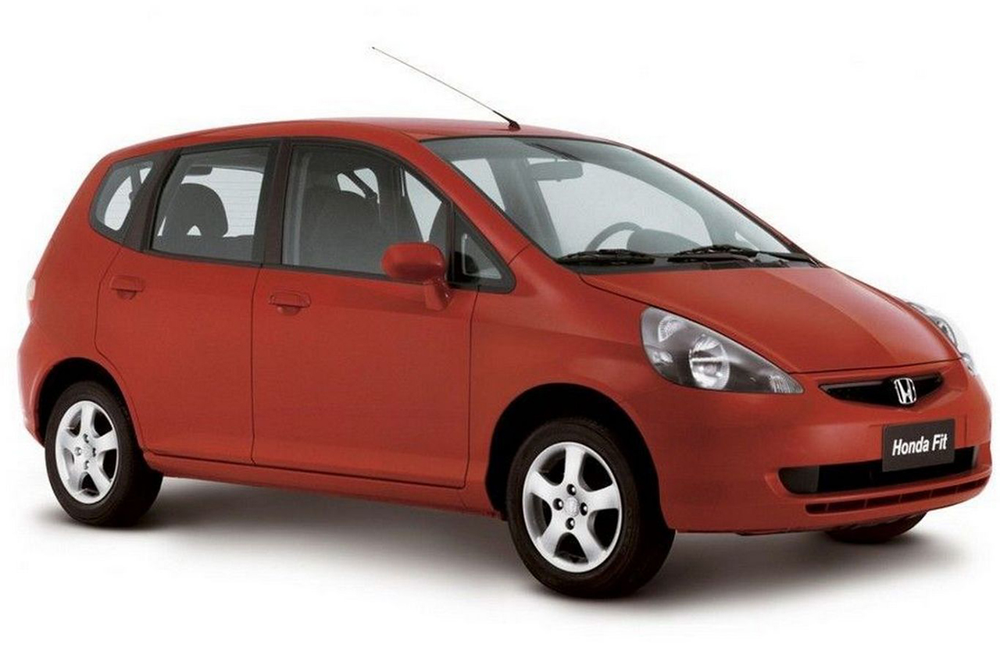

Honda Fit - Primeira geração
Manual de reparação
Sumário
- Diagramas elétricos
- Informações gerais
- Especificações
- Lubrificantes e fluidos
- Motor (elétrica)
- Motor (Mecânica)
- Arrefecimento
- Injeção eletrônica
- Transmissão Manual
- Transmissão CVT
- Direção
- Suspensão
- ABS
- Freios
- Carroceria
- Climatização
- Acessórios
- Segurança
- Controle de estabilidade
Diagramas elétricos
- Diagramas Eléctricos
- Índice dos Diagramas Eléctricos
- Índice do Suplemento do Diagrama do Circuito
- Índice do Suplemento do Diagrama do Circuito
- Índice do Suplemento do Diagrama do Circuito
- Índice do Suplemento do Diagrama do Circuito
Informações gerais
- Abreviaturas
- Abreviaturas
- Abreviaturas (L12A/L13A excepto KM/KP)
- Abreviaturas (L15A)
- Pontos de Elevação e de Apoio
- Reboque
- Precauções de Manutenção
- Números do VIN, do Motor e da Caixa de Velocidades (L12A/L13A excepto KM/KP)
- Números do VIN, do Motor e da Caixa de Velocidades (L15A)
- Mensagens de Segurança (L12A/L13A excepto KM/KP)
- Mensagens de Segurança (L15A)
- Localizações do Número da Caixa de Velocidades e do VIN
- Localizações dos Autocolantes de Atenção/Advertência
Especificações
- Especificações de Construção
- Especificações da Carroçaria
- Especificações da Carroçaria
- Especificações de Construção (L12A/L13A excepto KM/KP)
- Especificações de Construção (L15A)
- Standards e Limites de Reparação - 1
- Standards e Limites de Reparação - 2
- Standards e Limites de Reparação - 3
- Standards e Limites de Reparação - 4
- Standards e Limites de Reparação - 5
- Standards e Limites de Reparação - 6
- Standards e Limites de Reparação - 7
- Standards e Limites de Reparação - 8
- Standards e Limites de Reparação - 9
- Standards e Limites de Reparação - 10
- Standards e Limites de Reparação - 11
- Standards e Limites de Reparação - 12
- Standards e Limites de Reparação - 13
- Standards e Limites de Reparação - 14
- Standards e Limites de Reparação - 15
- Standards e Limites de Reparação - 16
- Standards e Limites de Reparação - 17
- Standards e Limites de Reparação - 18
- Standards e Limites de Reparação - 19
- Standards e Limites de Reparação - 20
- Standards e Limites de Reparação - 21
- Standards e Limites de Reparação - 22
- Standards e Limites de Reparação - 23
- Standards e Limites de Reparação - 24
- Standards e Limites de Reparação - 25
- Standards e Limites de Reparação - 26
- Standards e Limites de Reparação - 27
- Standards e Limites de Reparação - 28
- Standards e Limites de Reparação - 29
- Standards e Limites de Reparação - 30
- Standards e Limites de Reparação - 31
- Standards e Limites de Reparação - 32
- Standards e Limites de Reparação - 33
- Standards e Limites de Reparação - 34
- Standards e Limites de Reparação - 35
- Standards e Limites de Reparação - 36
- Standards e Limites de Reparação - 37
- Standards e Limites de Reparação - 38
- Standards e Limites de Reparação - 39
- Standards e Limites de Reparação - 40
Lubrificantes e fluidos
- Lubrificantes e Fluídos (L12A/L13A excepto KM/KP)
- Lubrificantes e Fluídos (L15A)
- Plano de Manutenção para Condições Normais - Excepto Modelos Europeus, Australianos e Neo-Zelandeses
- Plano de Manutenção para Condições Severas - Excepto Modelos Europeus, Australianos e Neo-Zelandeses
Motor (elétrica)
Alternador
- Reparação Geral do Alternador
- Substituição do Alternador (Sem ETCS)
- Substituição do Alternador (Com ETCS)
- Substituição da Correia do Alternador
- Inspeção e Ajuste da Correia do Alternador
- Localização dos Componentes do Sistema de Carga
- Localização dos Componentes do Sistema de Carga (Sem ETCS)
- Localização dos Componentes do Sistema de Carga (Com ETCS)
- Diagnóstico de Avarias do Circuito de Carga
- Diagnóstico de Avarias do Circuito de Carga (Sem ETCS)
- Diagnóstico de Avarias do Circuito de Carga (Com ETCS)
Arranque
- Localizações dos Componentes do Sistema de Arranque
- Diagrama do Circuito do Sistema de Arranque
- Diagnóstico de Avarias do Circuito do Motor de Arranque
- Ensaio do Funcionamento do Motor de Arranque
- Reparação Geral do Motor de Arranque
- Localização dos Componentes do Sistema de Arranque - Suplemento (Com ETCS)
- Substituição do Motor de Arranque (Sem ETCS)
- Substituição do Motor de Arranque (Com ETCS)
- Ensaio do Solenoide do Motor de Arranque
Ignição
- Localizações dos Componentes do Sistema da Ignição (L12A/L13A sem ETCS)
- Localizações dos Componentes do Sistema da Ignição (L15A)
- Localizações dos Componentes do Sistema da Ignição (Com ETCS)
- Remoção/Instalação da Bobina da Ignição (L12A/L13A)
- Inspeção do Ponto de Ignição (L12A/L13A sem ETCS)
- Diagrama do Circuito do Sistema de Carga
- Diagrama do Circuito do Sistema da Ignição (L12A/L13A)
- Inspeção da Vela de Ignição (L12A/L13A)
- Inspeção do Ponto de Ignição (L15A)
- Remoção/Instalação da Bobina da Ignição (L15A)
- Inspeção do Ponto de Ignição (Com ETCS)
- Diagrama do Circuito do Sistema da Ignição (L15A)
- Diagrama do Circuito do Sistema de Carga
- Diagrama do Circuito do Sistema da Ignição - Excepto L15A1
- Diagrama do Circuito do Sistema da Ignição - L15A1
- Diagnóstico de Avarias da Bobina da Ignição (L12A/L13A sem ETCS)
- Diagnóstico de Avarias da Bobina da Ignição (L15A)
- Diagnóstico de Avarias da Bobina da Ignição (Com ETCS)
- Diagnóstico de Avarias da Bobina de Ignição - L15A1
- Diagnóstico de Avarias da Bobina de Ignição - Excepto L15A1
Velas
- Inspeção da Vela de Ignição (L15A)
- Inspeção das Velas - Excepto L15A1 (Modelo IN), L15A5 e L15A6
- Inspeção da Vela - L15A5 (Modelo IN)
- Inspeção da Vela - L15A5 (Modelo FO)
- Inspeção das Velas - L15A1 (Modelo IN) e L15A6
Motor (Mecânica)
Localizações
- Localização dos Componentes do Conjunto da Cabeça do Motor (L12A/L13A)
- Localização dos Componentes do Conjunto da Cabeça do Motor (L15A)
- Localização dos Componentes do Conjunto da Cabeça do Motor
- Localização dos Componentes do Conjunto da Cabeça do Motor
Inspeção
- Inspeção da Compressão do Motor
- Inspeção do Empeno da Cabeça do Motor
- Inspeção da Folga Haste-Guia da Válvula
- Inspeção do Parafuso da Biela
- Inspeção da Folga Longitudinal da Biela e da Cambota
- Inspeção da Cambota
- Inspeção do Balanceiro e do Veio (L12A/L13A)
- Inspeção do Balanceiro e do Veio (L15A)
- Inspeção da Válvula (L12A/L13A)
- Inspeção da Válvula (L15A)
- Inspeção do Bloco e do Pistão (L12A/L13A)
- Inspeção do Bloco e do Pistão (L15A)
- Inspeção do comando de válvulas (L12A/L13A)
- Inspeção do comando de válvulas (L15A)
- Inspeção do comando de válvulas
- Inspeção do comando de válvulas
Ensaios e afinações
- Ensaio da Pressão do Óleo do Motor
- Ensaio do Pressostato do Óleo do Motor
- Ensaio dos Balanceiros VTEC (L15A)
- Afinação da Folga da Válvula (L12A/L13A)
- Afinação da Folga da Válvula (L15A)
Remoção
- Remoção da Corrente do comando de válvulas
- Remoção das Válvulas, Molas e Vedantes das Válvulas
- Remoção do Cárter do Óleo do Motor
- Remoção e Instalação da Polia da Cambota
- Remoção da Cambota e dos Pistões
- Remoção e Instalação do Colector de Escape
- Remoção e Instalação do Colector de Admissão (Sem ETCS)
- Remoção da Cabeça do Motor (L12A/L13A)
- Remoção da Tampa da Cabeça do Motor (L12A/L13A)
- Remoção do comando de válvulas (L12A/L13A)
- Remoção da Roda Dentada do comando de válvulas (L12A/L13A)
- Remoção do Conjunto do Balanceiro (L12A/L13A)
- Remoção do Motor (L12A/L13A sem ETCS)
- Remoção da Cabeça do Motor (L15A)
- Remoção da Tampa da Cabeça do Motor (L15A)
- Remoção do comando de válvulas (L15A)
- Remoção da Roda Dentada do comando de válvulas (L15A)
- Remoção do Conjunto do Balanceiro (L15A)
- Remoção do Motor (L15A)
- Remoção do Motor (Com ETCS)
- Remoção e Instalação do Colector de Admissão (Com ETCS)
Substituição
- Substituição do Bronze da Biela
- Substituição do Pistão, da Cavilha e da Biela
- Substituição dos Segmentos do Pistão
- Substituição do Filtro do Óleo do Motor
- Substituição do Tubo Rígido de Alimentação do Filtro do Óleo do Motor
- Substituição do Pressostato do Óleo do Motor
- Substituição do Óleo do Motor
- Substituição da Guia da Válvula (L12A/L13A)
- Substituição do Rolamento Principal da Cambota (L12A/L13A)
- Substituição do Tubo Rígido de Escape e do Silenciador
- Substituição da Guia da Válvula (L15A)
- Substituição do Rolamento Principal da Cambota (L15A)
- Substituição do Tubo Rígido de Escape e do Silenciador (KU)
- Substituição do Tubo Rígido de Escape e do Silenciador (Excepto KU)
Instalação
- Instalação do Retentor do Cárter da Corrente do comando de válvulas
- Instalação das Válvulas, Molas e Vedantes das Válvulas
- Instalação do Cárter do Óleo do Motor
- Instalação da Cambota
- Instalação do Pistão
- Instalação do Separador de Óleo do Motor/Ar
- Instalação da Cabeça do Motor (L12A/L13A)
- Instalação da Tampa da Cabeça do Motor (L12A/L13A)
- Instalação do comando de válvulas (L12A/L13A)
- Instalação da Roda Dentada do comando de válvulas (L12A/L13A)
- Instalação do Conjunto do Balanceiro (L12A/L13A)
- Instalação da Corrente do comando de válvulas (L12A/L13A)
- Instalação do Motor (L12A/L13A sem ETCS)
- Instalação da Cabeça do Motor (L15A)
- Instalação da Tampa da Cabeça do Motor (L15A)
- Instalação do comando de válvulas (L15A)
- Instalação da Roda Dentada do comando de válvulas (L15A)
- Instalação do Conjunto do Balanceiro (L15A)
- Instalação da Corrente do comando de válvulas (L15A)
- Instalação do Motor (L15A)
- Instalação do Motor (Com ETCS)
Substituição
- Retificação da Sede da Válvula
- Polimento do Cilindro
- Localizações dos Componentes do Sistema de Lubrificação do Motor
- Reparação Geral da Bomba do Óleo do Motor
- Desmontagem/Montagem dos Balanceiros e do Veio (L12A/L13A)
- Localizações dos Componentes do Conjunto do Bloco do Motor (L12A/L13A)
- Desmontagem/Montagem dos Balanceiros e do Veio (L15A)
- Localizações dos Componentes do Conjunto do Bloco do Motor (L15A)
Arrefecimento
Localizações e verificações
- Localização dos Componentes do Sistema de Arrefecimento (L12A/L13A)
- Localização dos Componentes do Sistema de Arrefecimento (L15A)
- Localização dos Componentes do Sistema de Arrefecimento
- Localização dos Componentes do Sistema de Arrefecimento
- Localizações dos Componentes dos Controlos da Ventoinha (L12A/L13A)
- Localizações dos Componentes dos Controlos da Ventoinha (L15A)
- Localizações dos Componentes dos Controlos da Ventoinha
- Verificação do Líquido de Arrefecimento
Ensaios e inspeções
- Ensaio do Radiador
- Ensaio do Tampão do Radiador
- Ensaio do Interruptor da Ventoinha do Radiador
- Ensaio do Motor da Ventoinha
- Ensaio do Termostato
- Ensaio do Termostato
- Ensaio do Motor da Ventoinha
- Ensaio do Termostato
- Inspeção da Bomba da Água
- Diagrama do Circuito dos Controlos da Ventoinha
Diagnóstico
- Diagnóstico de Avarias do Circuito da Ventoinha do Radiador
- Diagnóstico de Avarias por Sintomas do Controlo da Ventoinha
- Diagnóstico de Avarias do Circuito do Interruptor da Ventoinha do Radiador (Interrupção)
- Diagnóstico de Avarias do Circuito do Interruptor da Ventoinha do Radiador (Curto-Circuito)
Substituições
- Instalação da Passagem do Sistema da Recirculação dos Gases de Escape (EGR)
- Substituição do Termostato
- Substituição da Bomba da Água
- Substituição do Interruptor da Ventoinha do Radiador
- Substituição do Radiador e da Ventoinha
- Substituição do Líquido de Arrefecimento (L12A/L13A)
- Substituição do Líquido de Arrefecimento (L15A)
Injeção eletrônica
- Inspeção do Catalisador (Sem ETCS)
- Substituição do Recipiente EVAP (Sem ETCS)
- Ensaio da Válvula de Duas Vias de EVAP (Sem ETCS)
- Substituição da Válvula EGR (Sem ETCS)
- Ensaio da Pressão do Combustível (Sem ETCS)
- Substituição do Filtro do Combustível (Sem ETCS)
- Precauções da Linha do Combustível/Uniões de Ligação Rápida (Sem ETCS)
- Inspeção da Linha do Respirador e da Linha de Aspiração (Sem ETCS)
- Remoção da Linha do Combustível/Uniões de Ligação Rápida (Sem ETCS)
- Instalação da Linha do Combustível/Uniões de Ligação Rápida (Sem ETCS)
- Inspeção da Linha do Combustível (Sem ETCS)
- Substituição do Regulador da Pressão do Combustível (Sem ETCS)
- Substituição da Bomba do Combustível/Unidade Sensora Emissora do Indicador do Nível do Combustível (Sem ETCS)
- Substituição do Depósito do Combustível (Sem ETCS)
- Ensaio do Indicador do Baixo Nível de Combustível (Sem ETCS)
- Substituição do Sensor CKP (Sem ETCS)
- Substituição do Sensor ECT (Sem ETCS)
- Substituição do HO2S Primário (Sem ETCS)
- Substituição do HO2S Secundário (Sem ETCS)
- Substituição do Sensor IAT (Sem ETCS)
- Substituição do Sensor de Detonação (Sem ETCS)
- Substituição do Sensor MAP (Sem ETCS)
- Substituição do Sensor TDC (Sem ETCS)
- Localizações dos Componentes do Sistema do Ar da Admissão (Sem ETCS)
- Ensaio do Corpo da Borboleta (Sem ETCS)
- Remoção/Instalação do Corpo da Borboleta (Sem ETCS)
- Desmontagem/Montagem do Corpo da Borboleta (Sem ETCS)
- Remoção/Instalação do Cabo do Acelerador (Sem ETCS)
- Afinação do Cabo do Acelerador (Sem ETCS)
- Inspeção e Ensaio da Válvula PCV (Sem ETCS)
- Diagnóstico de Avarias por DTC: P0420 (67-1) (5MT sem ETCS)
- Diagnóstico de Avarias por DTC: P0401 (80-1) (5MT sem ETCS)
- Diagnóstico de Avarias do Sistema EVAP (L12A/L13A 5MT sem ETCS)
- Substituição do Injector do Combustível (L12A/L13A sem ETCS)
- Ensaio do Injector do Combustível (L12A/L13A excepto 5MT-KM/KP)
- Descrição do Sistema do Combustível e Emissões
- Descrição do Sistema do Combustível e Emissões - Diagrama do Circuito
- Descrição do Sistema do Combustível e Emissões - Diagrama Eléctrico
- Diagnóstico de Avarias por Sintomas do Sistema do Combustível e Emissões
- Localizações dos Componentes do Sistema EVAP
- Localizações dos Componentes do Sistema de Alimentação do Combustível
- Diagnóstico de Avarias do Circuito da Bomba do Combustível
- Localizações dos Componentes do Sistema da PGM-FI
- Diagnóstico de Avarias do Circuito da DLC
- Diagnóstico de Avarias do Circuito da MIL
- Localizações dos Componentes do Sistema de Controlo do Ralenti
- Diagnóstico de Avarias do Circuito do Sinal do A/C
- Diagnóstico de Avarias do Circuito do Sinal FR do Alternador
- Diagnóstico de Avarias do Circuito do Sinal do Interruptor da Posição do Pedal dos Freios
- Como Diagnosticar Avarias dos Sistemas do Combustível e Emissões (5MT)
- Diagnóstico de Avarias por DTC: P1607 (0-2) (5MT)
- Diagnóstico de Avarias por DTC: P0131 (1-1) (5MT)
- Diagnóstico de Avarias por DTC: P0132 (1-2) (5MT)
- Diagnóstico de Avarias por DTC: P0107 (3-1) (5MT)
- Diagnóstico de Avarias por DTC: P0108 (3-2) (5MT)
- Diagnóstico de Avarias por DTC: P0335 (4-1), P0336 (4-2) (5MT)
- Diagnóstico de Avarias por DTC: P0117 (6-1) (5MT)
- Diagnóstico de Avarias por DTC: P0118 (6-2) (5MT)
- Diagnóstico de Avarias por DTC: P0122 (7-1) (5MT)
- Diagnóstico de Avarias por DTC: P0123 (7-2) (5MT)
- Diagnóstico de Avarias por DTC: P1361 (8-2), P1362 (8-1) (5MT)
- Diagnóstico de Avarias por DTC: P0112 (10-1) (5MT)
- Diagnóstico de Avarias por DTC: P0113 (10-2) (5MT)
- Diagnóstico de Avarias por DTC: P1498 (12-2) (5MT)
- Diagnóstico de Avarias por DTC: P1491 (12-3) (5MT)
- Diagnóstico de Avarias por DTC: P1107 (13-1), P1108 (13-2) (5MT)
- Diagnóstico de Avarias por DTC: P1519 (14-3) (5MT)
- Diagnóstico de Avarias por DTC: P1351 (15-5), P1352 (15-6), P1353 (15-7), P1354 (15-8) (5MT)
- Diagnóstico de Avarias por DTC: P0500 (17-1) (5MT)
- Diagnóstico de Avarias por DTC: P1297 (20-1) (5MT)
- Diagnóstico de Avarias por DTC: P1298 (20-2) (5MT)
- Diagnóstico de Avarias por DTC: P0325 (23-1) (5MT)
- Diagnóstico de Avarias por DTC: P0563 (34-2) (5MT)
- Diagnóstico de Avarias por DTC: P0135 (41-2) (5MT)
- Diagnóstico de Avarias por DTC: P0171 (45-2), P0172 (45-1) (5MT)
- Diagnóstico de Avarias por DTC: P0133 (61-1) (5MT)
- Diagnóstico de Avarias por DTC: P0137 (63-1) (5MT)
- Diagnóstico de Avarias por DTC: P0138 (63-2) (5MT)
- Diagnóstico de Avarias por DTC: P0139 (63-3) (5MT)
- Diagnóstico de Avarias por DTC: P0141 (65-2) (5MT)
- Diagnóstico de Avarias por DTC: P0301 (71-1), P0302 (72-1), P0303 (73-1), P0304 (74-1) (5MT)
- Diagnóstico de Avarias por DTC: P0300 (71-1), P0300 (72-1), P0300 (73-1), P0300 (74-1) (5MT)
- Diagnóstico de Avarias por DTC: P0443 (92-4) (5MT)
- Descrição do Sistema do Combustível e Emissões - Suplemento (CVT-KG/KE/KR/KK/KT)
- Ensaio das Emissões pela Ponteira do Escape (Sem ETCS)
- Despressurização do Combustível (Sem ETCS)
- Ensaio da Unidade Sensora Emissora do Indicador do Nível do Combustível (Sem ETCS)
- Inspeção da Velocidade do Ralenti (L12A/L13A 5MT sem ETCS)
- Substituição do Filtro do Ar (Sem ETCS)
- Substituição do Elemento do Filtro do Ar (Sem ETCS)
- Localizações dos Componentes do Sistema da PGM-FI (L15A)
- Diagnóstico de Avarias do Circuito da DLC (L15A)
- Substituição do Injector do Combustível (L15A)
- Inspeção da Velocidade do Ralenti - Modelo Com Aquecedor (L15A)
- Diagnóstico de Avarias do Circuito do Sinal do A/C (L15A)
- Diagnóstico de Avarias do Circuito do Sinal FR do Alternador (L15A)
- Diagnóstico de Avarias por DTC: P1351 (15-5), P1353 (15-7) (L15A 5MT)
- Diagnóstico de Avarias por DTC: P1253 (21-1) (L15A 5MT)
- Localizações dos Componentes do Sistema de Controlo do Ralenti
- Diagnóstico de Avarias do Circuito do Sinal do Interruptor da Posição do Pedal dos Freios
- Localizações dos Componentes do Sistema de Alimentação do Combustível (5MT sem ETCS)
- Localizações dos Componentes do Sistema de Alimentação do Combustível (5MT-KG/KE/KR)
- Localizações dos Componentes do Sistema da PGM-FI (5MT-KG/KE/KR)
- Inspeção da Velocidade do Ralenti (5MT-KG/KE/KR)
- Diagnóstico de Avarias do Circuito do Sinal FR do Alternador (5MT-KG/KE/KR)
- Localizações dos Componentes do Sistema de Alimentação do Combustível (L12A/L13A 5MT-KM/KP)
- Localizações dos Componentes do Sistema da PGM-FI (L12A/L13A 5MT-KM/KP)
- Ensaio do Injector do Combustível (L12A/L13A 5MT-KM/KP)
- Inspeção da Velocidade do Ralenti (L12A/L13A 5MT-KM/KP)
- Diagnóstico de Avarias do Circuito do Sinal FR do Alternador (L12A/L13A 5MT-KM/KP)
- Ensaio das Emissões pela Ponteira do Escape (Com ETCS)
- Inspeção do Catalisador (Com ETCS)
- Localizações dos Componentes do Sistema EVAP (Com ETCS)
- Diagnóstico de Avarias do Sistema EVAP (Com ETCS)
- Substituição do Recipiente EVAP (Com ETCS)
- Ensaio da Válvula de Duas Vias de EVAP (Com ETCS)
- Substituição da Válvula de Duas Vias EVAP (Com ETCS)
- Localizações dos Componentes do Sistema EGR (Com ETCS)
- Substituição da Válvula EGR (Com ETCS)
- Localização dos Componentes do Sistema de Controlo Eletrônico da Borboleta (Com ETCS)
- Substituição do sensor APP (Com ETCS)
- Ensaio da Pressão do Combustível (Com ETCS)
- Substituição do Filtro do Combustível (Com ETCS)
- Precauções da Linha do Combustível/Uniões de Ligação Rápida (Com ETCS)
- Inspeção da Linha do Respirador e da Linha de Aspiração (Com ETCS)
- Remoção da Linha do Combustível/Uniões de Ligação Rápida (Com ETCS)
- Instalação da Linha do Combustível/Uniões de Ligação Rápida (Com ETCS)
- Inspeção da Linha do Combustível (Com ETCS)
- Substituição do Regulador da Pressão do Combustível (Com ETCS)
- Substituição da Bomba do Combustível/Unidade Sensora Emissora do Indicador do Nível do Combustível (Com ETCS)
- Substituição do Depósito do Combustível (Com ETCS)
- Drenagem do Depósito do Combustível (Com ETCS)
- Ensaio do Indicador do Baixo Nível de Combustível (Com ETCS)
- Substituição do Sensor CMP (Com ETCS)
- Substituição do Sensor CKP (Com ETCS)
- Diagnóstico de Avarias do Circuito da DLC (Com ETCS)
- Substituição do Sensor ECT (Com ETCS)
- Substituição do HO2S Primário (Com ETCS)
- Substituição do HO2S Secundário (Com ETCS)
- Substituição do Injector (Com ETCS)
- Substituição do Sensor IAT/MAP (Com ETCS)
- Substituição do Sensor de Detonação (Com ETCS)
- Diagnóstico de Avarias do Circuito do Sinal do A/C (Com ETCS)
- Remoção/Instalação do Corpo da Borboleta (Com ETCS)
- Limpeza do Corpo da Borboleta (Com ETCS)
- Desmontagem/Montagem do Corpo da Borboleta (Com ETCS)
- Remoção/Instalação do Cabo do Acelerador (Com ETCS)
- Afinação do Cabo do Acelerador (Com ETCS)
- Inspeção e Ensaio da Válvula PCV (Com ETCS)
- Diagnóstico de Avarias por DTC: P0068 (Com ETCS)
- Diagnóstico de Avarias por DTC: P0106 (Com ETCS)
- Diagnóstico de Avarias por DTC: P0107 (3) (Com ETCS)
- Diagnóstico de Avarias por DTC: P0108 (3) (Com ETCS)
- Diagnóstico de Avarias por DTC: P0112 (10) (Com ETCS)
- Diagnóstico de Avarias por DTC: P0113 (10) (Com ETCS)
- Diagnóstico de Avarias por DTC: P0117 (6) (Com ETCS)
- Diagnóstico de Avarias por DTC: P0118 (6) (Com ETCS)
- Diagnóstico de Avarias por DTC: P0121 (7), P0221 (Com ETCS)
- Diagnóstico de Avarias por DTC: P0122 (7) (Com ETCS)
- Diagnóstico de Avarias por DTC: P0123 (7) (Com ETCS)
- Diagnóstico de Avarias por DTC: P0125 (Com ETCS)
- Diagnóstico de Avarias por DTC: P0130 (Com ETCS)
- Diagnóstico de Avarias por DTC: P0132 (1) (Com ETCS)
- Diagnóstico de Avarias por DTC: P0133 (61) (Com ETCS)
- Diagnóstico de Avarias por DTC: P0134 (Com ETCS)
- Diagnóstico de Avarias por DTC: P0137 (63) (Com ETCS)
- Diagnóstico de Avarias por DTC: P0138 (63) (Com ETCS)
- Diagnóstico de Avarias por DTC: P0140 (Com ETCS)
- Diagnóstico de Avarias por DTC: P0171 (45), P0172 (45) (Com ETCS)
- Diagnóstico de Avarias por DTC: P0201 (71), P0202 (72), P0203 (73), P0204 (Com ETCS)
- Diagnóstico de Avarias por DTC: P0222 (7) (Com ETCS)
- Diagnóstico de Avarias por DTC: P0223 (7) (Com ETCS)
- Diagnóstico de Avarias por DTC: P0261 (71), P0264 (72), P0267 (73), P0270 (74) (Com ETCS)
- Diagnóstico de Avarias por DTC: P0262 (71), P0265 (72), P0268 (73), P0271 (74) (Com ETCS)
- Diagnóstico de Avarias por DTC: P0300 e alguns dos P0301, P0302, P0303, P0304 (Com ETCS)
- Diagnóstico de Avarias por DTC: P0301 (71), P0302 (72), P0303 (73), P0304 (74) (Com ETCS)
- Diagnóstico de Avarias por DTC: P0324 (136) (Com ETCS)
- Diagnóstico de Avarias por DTC: P0327 (23) (Com ETCS)
- Diagnóstico de Avarias por DTC: P0335 (4) (Com ETCS)
- Diagnóstico de Avarias por DTC: P0339 (4) (Com ETCS)
- Diagnóstico de Avarias por DTC: P0342 (9) (Com ETCS)
- Diagnóstico de Avarias por DTC: P0343 (Com ETCS)
- Diagnóstico de Avarias por DTC: P0344 (9) (Com ETCS)
- Diagnóstico de Avarias por DTC: P0351 (71), P0352 (71), P0353 (72), P0354 (72), P0355 (73), P0356 (73), P0357 (74), P0358 (Com ETCS)
- Diagnóstico de Avarias por DTC: P0401 (80) (Com ETCS)
- Diagnóstico de Avarias por DTC: P0403 (12) (Com ETCS)
- Diagnóstico de Avarias por DTC: P0404 (12) (Com ETCS)
- Diagnóstico de Avarias por DTC: P0405 (12) (Com ETCS)
- Diagnóstico de Avarias por DTC: P0406 (12) (Com ETCS)
- Diagnóstico de Avarias por DTC: P0409 (12) (Com ETCS)
- Diagnóstico de Avarias por DTC: P0420 (67) (Com ETCS)
- Diagnóstico de Avarias por DTC: P0445 (92) (Com ETCS)
- Diagnóstico de Avarias por DTC: P0489 (12) (Com ETCS)
- Diagnóstico de Avarias por DTC: P0490 (12) (Com ETCS)
- Diagnóstico de Avarias por DTC: P0506 (14) (Com ETCS)
- Diagnóstico de Avarias por DTC: P0507 (14) (Com ETCS)
- Diagnóstico de Avarias por DTC: P0560 (34) (Com ETCS)
- Diagnóstico de Avarias por DTC: P0603 (0), P0604 (0), P0605 (Com ETCS)
- Diagnóstico de Avarias por DTC: P0607 (137) (Com ETCS)
- Diagnóstico de Avarias por DTC: P0638 (40) (Com ETCS)
- Diagnóstico de Avarias por DTC: P1249 (40) (Com ETCS)
- Diagnóstico de Avarias por DTC: P1297 (20) (Com ETCS)
- Diagnóstico de Avarias por DTC: P1683 (40) (Com ETCS)
- Diagnóstico de Avarias por DTC: P1684 (40) (Com ETCS)
- Diagnóstico de Avarias por DTC: P2109 (40) (Com ETCS)
- Diagnóstico de Avarias por DTC: P2118 (40) (Com ETCS)
- Diagnóstico de Avarias por DTC: P2122 (37) (Com ETCS)
- Diagnóstico de Avarias por DTC: P2123 (37) (Com ETCS)
- Diagnóstico de Avarias por DTC: P2127 (37) (Com ETCS)
- Diagnóstico de Avarias por DTC: P2128 (37) (Com ETCS)
- Diagnóstico de Avarias por DTC: P2138 (37) (Com ETCS)
- Diagnóstico de Avarias por DTC: P2227 (Com ETCS)
- Diagnóstico de Avarias por DTC: P2228 (13) (Com ETCS)
- Diagnóstico de Avarias por DTC: P2229 (13) (Com ETCS)
- Diagnóstico de Avarias por DTC: P2270 (63), P2271 (63) (Com ETCS)
- Diagnóstico de Avarias do Circuito da DLC (L12A/L13A sem ETCS)
- Diagnóstico de Avarias do Circuito do Sinal do A/C (L12A/L13A sem ETCS)
- Localizações dos Componentes do Sistema de Controlo EVAP (L12A/L13A 5MT sem ETCS)
- Diagnóstico de Avarias do Circuito do Sinal FR do Alternador (L12A/L13A 5MT sem ETCS)
- Diagnóstico de Avarias por DTC: P1607 (0-2) (L12A/L13A 5MT sem ETCS)
- Diagnóstico de Avarias por DTC: P0131 (1-1) (L12A/L13A 5MT sem ETCS)
- Diagnóstico de Avarias por DTC: P0132 (1-2) (L12A/L13A 5MT sem ETCS)
- Diagnóstico de Avarias por DTC: P0107 (3-1) (L12A/L13A 5MT sem ETCS)
- Diagnóstico de Avarias por DTC: P0108 (3-2) (L12A/L13A 5MT sem ETCS)
- Diagnóstico de Avarias por DTC: P0117 (6-1) (L12A/L13A 5MT sem ETCS)
- Diagnóstico de Avarias por DTC: P0118 (6-2) (L12A/L13A 5MT sem ETCS)
- Diagnóstico de Avarias por DTC: P0122 (7-1) (L12A/L13A 5MT sem ETCS)
- Diagnóstico de Avarias por DTC: P0123 (7-2) (L12A/L13A 5MT sem ETCS)
- Diagnóstico de Avarias por DTC: P1361 (8-2), P1362 (8-1) (L12A/L13A 5MT sem ETCS)
- Diagnóstico de Avarias por DTC: P0112 (10-1) (L12A/L13A 5MT sem ETCS)
- Diagnóstico de Avarias por DTC: P0113 (10-2) (L12A/L13A 5MT sem ETCS)
- Diagnóstico de Avarias por DTC: P1498 (12-2) (L12A/L13A 5MT sem ETCS)
- Diagnóstico de Avarias por DTC: P1491 (12-3) (L12A/L13A 5MT sem ETCS)
- Diagnóstico de Avarias por DTC: P1107 (13-1), P1108 (13-2) (L12A/L13A 5MT sem ETCS)
- Diagnóstico de Avarias por DTC: P1519 (14-3) (L12A/L13A 5MT sem ETCS)
- Diagnóstico de Avarias por DTC: P1351 (15-5), P1352 (15-6), P1353 (15-7), P1354 (15-8) (L12A/L13A 5MT sem ETCS)
- Diagnóstico de Avarias por DTC: P0500 (17-1) (L12A/L13A 5MT sem ETCS)
- Diagnóstico de Avarias por DTC: P1297 (20-1) (L12A/L13A 5MT sem ETCS)
- Diagnóstico de Avarias por DTC: P0325 (23-1) (L12A/L13A 5MT sem ETCS)
- Diagnóstico de Avarias por DTC: P0171 (45-2), P0172 (45-1) (L12A/L13A 5MT sem ETCS)
- Diagnóstico de Avarias por DTC: P0133 (61-1) (L12A/L13A 5MT sem ETCS)
- Diagnóstico de Avarias por DTC: P0137 (63-1) (L12A/L13A 5MT sem ETCS)
- Diagnóstico de Avarias por DTC: P0138 (63-2) (L12A/L13A 5MT sem ETCS)
- Diagnóstico de Avarias por DTC: P0139 (63-3) (L12A/L13A 5MT sem ETCS)
- Diagnóstico de Avarias por DTC: P0300 (71-1), P0300 (72-1), P0300 (73-1), P0300 (74-1) (L12A/L13A 5MT sem ETCS)
- Localizações dos Componentes do Sistema de Controlo EVAP (L12A/L13A CVT-KM/KP)
- Diagnóstico de Avarias do Sistema EVAP (L12A/L13A CVT-KM/KP)
- Localizações dos Componentes do Sistema de Alimentação do Combustível (L12A/L13A CVT-KM/KP)
- Diagnóstico de Avarias do Circuito do Sinal FR do Alternador (L12A/L13A CVT-KM/KP)
- Despressurização do Combustível (Com ETCS)
- Ensaio da Unidade Sensora Emissora do Indicador do Nível do Combustível (Com ETCS)
- Como Diagnosticar Avarias dos Sistemas do Combustível e Emissões (Com ETCS)
- Diagnóstico de Avarias por DTC: P0135 (41) (Com ETCS)
- Diagnóstico de Avarias por DTC: P0141 (65) (Com ETCS)
- Diagnóstico de Avarias por DTC: P0444 (92) (Com ETCS)
- Diagnóstico de Avarias por DTC: P0500 (17) (Com ETCS)
- Diagnóstico de Avarias por DTC: P0504 (159) (Com ETCS)
- Diagnóstico de Avarias por DTC: P0562 (34), P0563 (Com ETCS)
- Diagnóstico de Avarias por DTC: P1298 (20) (Com ETCS)
- Descrição do Sistema do Combustível e Emissões (5MT sem ETCS)
- Descrição do Sistema do Combustível e Emissões - Diagrama do Circuito (5MT sem ETCS)
- Descrição do Sistema do Combustível e Emissões - Diagrama Eléctrico (5MT sem ETCS)
- Diagnóstico de Avarias por Sintomas do Sistema do Combustível e Emissões (5MT sem ETCS)
- Descrição do Sistema do Combustível e Emissões (5MT-KG/KE/KR)
- Descrição do Sistema do Combustível e Emissões - Diagrama do Circuito (5MT-KG/KE/KR)
- Descrição do Sistema do Combustível e Emissões - Diagrama Eléctrico (5MT-KG/KE/KR)
- Diagnóstico de Avarias por Sintomas do Sistema do Combustível e Emissões (5MT-KG/KE/KR)
- Diagnóstico de Avarias do Circuito da Bomba do Combustível (5MT-KG/KE/KR)
- Diagnóstico de Avarias do Circuito da MIL (5MT-KG/KE/KR)
- Procedimento de Aprendizagem do Ralenti do ECM/PCM (L12A/L13A 5MT)
- Diagnóstico de Avarias do Circuito da Bomba do Combustível (L12A/L13A 5MT sem ETCS)
- Como Diagnosticar Avarias dos Sistemas do Combustível e Emissões (L12A/L13A 5MT sem ETCS)
- Diagnóstico de Avarias por DTC: P1298 (20-2) (L12A/L13A 5MT sem ETCS)
- Diagnóstico de Avarias por DTC: P0563 (34-2) (L12A/L13A 5MT sem ETCS)
- Diagnóstico de Avarias por DTC: P0135 (41-2) (L12A/L13A 5MT sem ETCS)
- Diagnóstico de Avarias por DTC: P0141 (65-2) (L12A/L13A 5MT sem ETCS)
- Diagnóstico de Avarias por DTC: P0301 (71-1), P0302 (72-1), P0303 (73-1), P0304 (74-1) (L12A/L13A 5MT sem ETCS)
- Diagnóstico de Avarias por DTC: P0443 (92-4) (L12A/L13A 5MT sem ETCS)
- Diagnóstico de Avarias do Circuito da MIL (L12A/L13A sem ETCS)
- Descrição do Sistema do Combustível e Emissões (5MT-KM/KP)
- Descrição do Sistema do Combustível e Emissões - Diagrama do Circuito (5MT-KM/KP)
- Descrição do Sistema do Combustível e Emissões - Diagrama Eléctrico (5MT-KM/KP)
- Diagnóstico de Avarias por Sintomas do Sistema do Combustível e Emissões (5MT-KM/KP)
- Diagnóstico de Avarias do Circuito da Bomba do Combustível (5MT-KM/KP)
- Diagnóstico de Avarias do Circuito da MIL (5MT-KM/KP)
- Descrição do Sistema do Combustível e Emissões (CVT-KM/KP)
- Descrição do Sistema do Combustível e Emissões - Diagrama do Circuito (CVT-KM/KP)
- Descrição do Sistema do Combustível e Emissões - Diagrama Eléctrico (CVT-KM/KP)
- Diagnóstico de Avarias por Sintomas do Sistema do Combustível e Emissões (CVT-KM/KP)
- Diagnóstico de Avarias do Circuito da Bomba do Combustível (CVT-KM/KP)
- Inspeção da Velocidade do Ralenti (CVT-KM/KP)
- Diagnóstico de Avarias do Circuito da Bomba do Combustível (L15A)
- Diagnóstico de Avarias do Circuito da MIL (L15A)
- Descrição do Sistema do Combustível e Emissões - Suplemento (L15A 5MT)
- Procedimento de Aprendizagem do Ralenti do ECM/PCM (L15A 5MT)
- Como Diagnosticar Avarias dos Sistemas do Combustível e Emissões (L15A 5MT)
- Diagnóstico de Avarias por DTC: P1607 (0-2) (L15A 5MT)
- Diagnóstico de Avarias por DTC: P0131 (1-1) (L15A 5MT)
- Diagnóstico de Avarias por DTC: P0132 (1-2) (L15A 5MT)
- Diagnóstico de Avarias por DTC: P0107 (3-1) (L15A 5MT)
- Diagnóstico de Avarias por DTC: P0108 (3-2) (L15A 5MT)
- Diagnóstico de Avarias por DTC: P0335 (4-1), P0336 (4-2) (L15A 5MT)
- Diagnóstico de Avarias por DTC: P0117 (6-1) (L15A 5MT)
- Diagnóstico de Avarias por DTC: P0118 (6-2) (L15A 5MT)
- Diagnóstico de Avarias por DTC: P0122 (7-1) (L15A 5MT)
- Diagnóstico de Avarias por DTC: P0123 (7-2) (L15A 5MT)
- Diagnóstico de Avarias por DTC: P1361 (8-2), P1362 (8-1) (L15A 5MT)
- Diagnóstico de Avarias por DTC: P0112 (10-1) (L15A 5MT)
- Diagnóstico de Avarias por DTC: P0113 (10-2) (L15A 5MT)
- Diagnóstico de Avarias por DTC: P1498 (12-2) (L15A 5MT)
- Diagnóstico de Avarias por DTC: P1491 (12-3) (L15A 5MT)
- Diagnóstico de Avarias por DTC: P1107 (13-1), P1108 (13-2) (L15A 5MT)
- Diagnóstico de Avarias por DTC: P1519 (14-3) (L15A 5MT)
- Diagnóstico de Avarias por DTC: P0500 (17-1) (L15A 5MT)
- Diagnóstico de Avarias por DTC: P1297 (20-1) (L15A 5MT)
- Diagnóstico de Avarias por DTC: P1298 (20-2) (L15A 5MT)
- Diagnóstico de Avarias por DTC: P0325 (23-1) (L15A 5MT)
- Diagnóstico de Avarias por DTC: P0563 (34-2) (L15A 5MT)
- Diagnóstico de Avarias por DTC: P0135 (41-2) (L15A 5MT)
- Remoção/Instalação do Filtro do Ar (Com ETCS)
- Inspeção/Substituição do Elemento do Filtro do Ar (Com ETCS)
- Localizações dos Componentes do Sistema da PGM-FI (L12A/L13A sem ETCS)
- Diagnóstico de Avarias por DTC: P0335 (4-1), P0336 (4-2) (L12A/L13A 5MT sem ETCS)
- Localizações dos Componentes do Sistema VTEC (L15A)
- Remoção/Inspeção da Válvula Solenoide VTEC (L15A)
- Localizações dos Componentes do Sistema do Ar da Admissão (Com ETCS, sem VSA)
- Procedimento de Aprendizagem do Ralenti do ECM/PCM (5MT)
- Descrição do Sistema do Combustível e Emissões (Com ETCS)
- Descrição do Sistema do Combustível e Emissões - Diagrama do Circuito (Com ETCS)
- Descrição do Sistema do Combustível e Emissões - Diagrama Eléctrico (Com ETCS)
- Descrição do Sistema do Combustível e Emissões (Sem ETCS)
- Descrição do Sistema do Combustível e Emissões - Diagrama do Circuito: Excepto L15A1 (Sem ETCS)
- Descrição do Sistema do Combustível e Emissões - Diagrama do Circuito: L15A1 (Sem ETCS)
- Descrição do Sistema do Combustível e Emissões - Diagrama Eléctrico: Excepto L15A1 (Sem ETCS)
- Descrição do Sistema do Combustível e Emissões - Diagrama Eléctrico: L15A1 (Sem ETCS)
- Inspeção da Velocidade do Ralenti (Sem ETCS)
- Como Diagnosticar Avarias dos Sistemas do Combustível e Emissões (5MT sem ETCS)
- Diagnóstico de Avarias por DTC: P0135 (41-2) (5MT sem ETCS)
- Diagnóstico de Avarias por DTC: P0141 (65-2) (5MT sem ETCS)
- Diagnóstico de Avarias por DTC: P0443 (92-4) (5MT sem ETCS)
- Diagnóstico de Avarias por Sintomas do Sistema do Combustível e Emissões (Com ETCS)
- Despressurização do Combustível (Com ETCS)
- Ensaio da Unidade Sensora Emissora do Indicador do Nível do Combustível (Com ETCS)
- Diagnóstico de Avarias do Circuito da Bomba do Combustível (Com ETCS)
- Diagnóstico de Avarias do Circuito da MIL (Com ETCS)
- Como Diagnosticar Avarias dos Sistemas do Combustível e Emissões (Com ETCS)
- Diagnóstico de Avarias por DTC: P0135 (41) (Com ETCS)
- Diagnóstico de Avarias por DTC: P0141 (65) (Com ETCS)
- Diagnóstico de Avarias por DTC: P0444 (92) (Com ETCS)
- Diagnóstico de Avarias por DTC: P0500 (17) (Com ETCS)
- Diagnóstico de Avarias por DTC: P0504 (159) (Com ETCS)
- Diagnóstico de Avarias por DTC: P0562 (34), P0563 (Com ETCS)
- Diagnóstico de Avarias por DTC: P1298 (20) (Com ETCS)
- Diagnóstico de Avarias por Sintomas do Sistema do Combustível e Emissões (Sem ETCS)
- Ensaio das Emissões pela Ponteira do Escape (Sem ETCS)
- Despressurização do Combustível (Sem ETCS)
- Ensaio da Unidade Sensora Emissora do Indicador do Nível do Combustível (Sem ETCS)
- Diagnóstico de Avarias do Circuito da Bomba do Combustível (Sem ETCS)
- Substituição da IMA (Sem ETCS)
- Diagnóstico de Avarias do Circuito da MIL (Sem ETCS)
- Diagnóstico de Avarias por DTC: P1213 (11-1) (5MT sem ETCS)
- Diagnóstico de Avarias por DTC: P1214 (11-2) (5MT sem ETCS)
- Diagnóstico de Avarias por DTC: P1298 (20-2) (5MT sem ETCS)
- Diagnóstico de Avarias por DTC: P0563 (34-2) (5MT sem ETCS)
- Diagnóstico de Avarias por DTC: P0301 (71-1), P0302 (72-1), P0303 (73-1), P0304 (74-1) (5MT sem ETCS)
- Descrição do Sistema do Combustível e Emissões - L15A1 (Modelo IN) e L15A6
- Descrição do Sistema do Combustível e Emissões - Diagrama do Circuito: L15A1(Modelo IN) e L15A6
- Descrição do Sistema do Combustível e Emissões - Diagrama Eléctrico: L15A1(Modelo IN) e L15A6
- Inspeção da Velocidade do Ralenti - L15A1 (Modelo IN) e L15A6
- Descrição do Sistema do Combustível e Emissões - L13A6 (CVT)
- Descrição do Sistema do Combustível e Emissões - Diagrama do Circuito: L13A6 (CVT)
- Descrição do Sistema do Combustível e Emissões - Diagrama Eléctrico: L13A6 (CVT)
- Inspeção da Velocidade do Ralenti - L13A6 (CVT)
- Descrição do Sistema do Combustível e Emissões - Excepto L12A4 e L13A6 (Com VSA)
- Descrição do Sistema do Combustível e Emissões - Diagrama do Circuito: Excepto L12A4 e L13A6 (Com VSA)
- Descrição do Sistema do Combustível e Emissões - Diagrama Eléctrico: Excepto L12A4 e L13A6 (Com VSA)
- Localizações dos Componentes do Sistema do Ar da Admissão (Com VSA)
- Substituição do Filtro do Ar (Com VSA)
- Substituição do Elemento do Filtro do Ar (Com VSA)
- Diagnóstico de Avarias por DTC: U0073 (Com VSA)
- Diagnóstico de Avarias por DTC: U0122 (Com VSA)
- Descrição do Sistema do Combustível e Emissões - Excepto L12A4, L13A6, L15A1 (Modelo IN) e L15A6 (Sem VSA)
- Descrição do Sistema do Combustível e Emissões - Diagrama do Circuito: Excepto L12A4, L13A6, L15A1 (Modelo IN) e L15A6 (Sem VSA)
- Descrição do Sistema do Combustível e Emissões - Diagrama Eléctrico: Excepto L12A4, L13A6, L15A1 (Modelo IN) e L15A6 (Sem VSA)
- Substituição do Filtro do Ar (Sem VSA)
- Substituição do Elemento do Filtro do Ar (Sem VSA)
- Inspeção da Velocidade do Ralenti - Excepto L12A4, L13A6, L15A1 (Modelo IN) e L15A6 (Sem ETCS)
- Como Diagnosticar Avarias dos Sistemas do Combustível e Emissões (5MT sem ETCS)
- Diagnóstico de Avarias por DTC: P0335 (4-1), P0339 (4-6) (5MT sem ETCS)
- Diagnóstico de Avarias por DTC: P0340 (8-5), P0344 (8-7) (5MT sem ETCS)
- Diagnóstico de Avarias por DTC: P0404 (12-4) (5MT sem ETCS)
- Diagnóstico de Avarias por DTC: P0406 (12-5) (5MT sem ETCS)
- Diagnóstico de Avarias por DTC: P2228 (13-5), P2229 (13-6) (5MT sem ETCS)
- Diagnóstico de Avarias por DTC: P0135 (41-2) (5MT sem ETCS)
- Diagnóstico de Avarias por DTC: P0141 (65-2) (5MT sem ETCS)
- Diagnóstico de Avarias por DTC: P0443 (92-4) (5MT sem ETCS)
- Diagnóstico de Avarias por DTC: P0607 (0-29) (5MT sem ETCS)
- Diagnóstico de Avarias por DTC: P0511 (14-12) (5MT sem ETCS)
- Localizações dos Componentes do Sistema da PGM-FI (L12A/L13A sem ETCS)
- Localizações dos Componentes do Sistema VTEC (L15A)
- Substituição do Pressostato do Óleo VTEC (L15A)
- Remoção/Inspeção da Válvula Solenoide VTEC (L15A)
- Diagnóstico de Avarias por DTC: P2645 (21-4) (L15A 5MT)
- Diagnóstico de Avarias por DTC: P1259 (22-4) (L15A 5MT)
- Descrição do Sistema do Combustível e Emissões - L12A4 e L13A6 (5MT)
- Descrição do Sistema do Combustível e Emissões - Diagrama do Circuito: L12A4 e L13A6 (5MT)
- Descrição do Sistema do Combustível e Emissões - Diagrama Eléctrico: L12A4 e L13A6 (5MT)
- Inspeção da Velocidade do Ralenti - L12A4 e L13A6 (5MT)
- Procedimento de Aprendizagem do Ralenti do ECM/PCM (5MT)
Transmissão Manual
- Remoção dos Veios da Caixa de Velocidades
- Instalação dos Veios da Caixa de Velocidades
- Inspeção do Veio da Caixa de Velocidades
- Ensaio do Interruptor da Luz da Marcha-Atrás (5MT)
- Inspeção e Substituição do MTF (5MT)
- Localização dos Componentes da Embreagem (5MT)
- Substituição da Embreagem (5MT)
- Remoção da Bomba Principal da Embreagem (5MT)
- Reparação Geral da Bomba Principal da Embreagem (5MT)
- Afinação do Pedal da Embreagem e do Parafuso de Afinação do Pedal da Embreagem (5MT)
- Substituição da Bomba Principal da Embreagem (5MT)
- Reparação Geral da Bomba Principal da Embreagem (5MT)
- Remoção da Caixa de Velocidades Manual (5MT)
- Instalação da Caixa de Velocidades Manual (5MT)
- Desmontagem da Caixa de Velocidades Manual (5MT)
- Montagem da Caixa de Velocidades Manual (5MT)
- Desmontagem do Contraveio da M/T (5MT)
- Montagem do Contraveio da M/T (5MT)
- Inspeção do Contraveio da M/T (5MT)
- Inspeção da Folga do Conjunto do Contraveio da T/M (5MT)
- Substituição do Rolamento do Contraveio da M/T (5MT)
- Inspeção da Folga da Forquilha da Marcha-Atrás da M/T (5MT)
- Substituição do Mecanismo das Mudanças da M/T (5MT)
- Inspeção da Folga da Alavanca das Mudanças da M/T (5MT)
- Desmontagem/Montagem do Conjunto da Alavanca das Mudanças da M/T (5MT)
- Inspeção da Folga das Forquilhas das Mudanças (5MT)
- Desmontagem/Montagem das Forquilhas das Mudanças da M/T (5MT)
- Desmontagem do Veio Primário da M/T (5MT)
- Montagem do Veio Primário da M/T (5MT)
- Inspeção do Veio Primário da M/T (5MT)
- Inspeção da Folga do Conjunto do Veio Primário da M/T (5MT)
- Afinação da Folga de Impulso do Veio Primário da M/T (5MT)
- Substituição do Retentor e do Rolamento do Veio Primário da M/T (5MT)
- Localizações dos Componentes do Diferencial da M/T (5MT)
- Substituição do Carreto Primário do Velocímetro/Rolamento da Coquilha do Diferencial (5MT)
- Substituição do Retentor do Diferencial da M/T (5MT)
- Inspeção da Folga entre Dentes (5MT)
- Substituição da Coquilha/Carreto Final do Diferencial da M/T (5MT)
- Inspeção do Carreto e do Aro do Sincronizador (5MT)
- Inspeção e Montagem do Cubo e do Colar do Sincronizador (5MT)
- Afinação da Folga de Impulso do Diferencial da M/T (L15A 5MT)
Transmissão CVT
Apresentação e localizações
- Descrição do Sistema da CVT (CVT)
- Descrição do Sistema da CVT - Controlos Eletrônicos (L15A CVT)
- Descrição do Sistema da CVT - Controlos Eletrônicos (L12A/L13A CVT)
- Verificação do Nível do ATF (CVT)
- Substituição do ATF (CVT)
- Localização dos Componentes do Indicador da Posição das Engrenagens da A/T (L12A/L13A CVT)
- Localização dos Componentes do Indicador da Posição das Engrenagens da A/T (L15A CVT)
- Localização dos Componentes do Sistema de Interbloqueio da A/T (L12A/L13A CVT)
- Localização dos Componentes do Sistema de Interbloqueio da A/T (L15A CVT)
- Localizações dos Componentes do Indicador da Posição das Mudanças da A/T (CVT)
- Teste de Estrada da CVT (CVT)
- Teste de Estrada da CVT (L15A CVT)
Diagnóstico
- Como Diagnosticar Avarias dos Sistemas da CVT (L12A/L13A CVT)
- Como Diagnosticar Avarias dos Sistemas da CVT (L15A CVT)
- Diagnóstico de Avarias por Sintomas do CVT (CVT)
- Diagnóstico de Avarias por DTC: P1705 (5-1) (L12A/L13A CVT)
- Diagnóstico de Avarias por DTC: P1706 (6-1) (L12A/L13A CVT)
- Diagnóstico de Avarias por DTC: P1879 (32-1) (L12A/L13A CVT)
- Diagnóstico de Avarias por DTC: P1882 (33-1) (L12A/L13A CVT)
- Diagnóstico de Avarias por DTC: P1885 (34-1) (L12A/L13A CVT)
- Diagnóstico de Avarias por DTC: P1886 (35-1) (L12A/L13A CVT)
- Diagnóstico de Avarias por DTC: P1887 (53-1) (L12A/L13A CVT)
- Diagnóstico de Avarias por DTC: P1888 (36-1) (L12A/L13A CVT)
- Diagnóstico de Avarias por DTC: P1894 (38-1) (L12A/L13A CVT)
- Diagnóstico de Avarias por DTC: P1895 (39-1) (L12A/L13A CVT)
- Diagnóstico de Avarias por DTC: P1890 (42-1) (L12A/L13A CVT)
- Diagnóstico de Avarias por DTC: P1891 (43-1) (L12A/L13A CVT)
- Diagnóstico de Avarias por DTC: P1705 (5-1) (L15A CVT)
- Diagnóstico de Avarias por DTC: P1706 (6-1) (L15A CVT)
- Diagnóstico de Avarias por DTC: P1879 (32-1) (L15A CVT)
- Diagnóstico de Avarias por DTC: P1882 (33-1) (L15A CVT)
- Diagnóstico de Avarias por DTC: P1885 (34-1) (L15A CVT)
- Diagnóstico de Avarias por DTC: P1886 (35-1) (L15A CVT)
- Diagnóstico de Avarias por DTC: P1887 (53-1) (L15A CVT)
- Diagnóstico de Avarias por DTC: P1888 (36-1) (L15A CVT)
- Diagnóstico de Avarias por DTC: P1894 (38-1) (L15A CVT)
- Diagnóstico de Avarias por DTC: P1895 (39-1) (L15A CVT)
- Diagnóstico de Avarias por DTC: P1890 (42-1) (L15A CVT)
- Diagnóstico de Avarias por DTC: P1891 (43-1) (L15A CVT)
- Diagnóstico de Avarias do Circuito do Indicador D (CVT)
Substituições
- Substituição dos Tubos Flexíveis do Arrefecedor do ATF (CVT)
- Substituição do Rolamento do Veio da Caixa de Velocidades Final do Corpo da Caixa de Velocidades CVT (CVT)
- Substituição do Rolamento do Veio da Caixa de Velocidades Final do Corpo do Volante do Motor da CVT (CVT)
- Substituição do Interruptor de Gama da Caixa de Velocidades (CVT)
- Substituição do Rolamento da Coquilha do Diferencial da CVT (CVT)
- Substituição da Coquilha do Diferencial/Carreto Secundário da Transmissão Final da CVT (CVT)
- Substituição do Retentor do Diferencial da CVT (CVT)
- Substituição do Sensor da Velocidade da Polia Primária da CVT (CVT)
- Substituição do Sensor da Velocidade da Polia Secundária da CVT (CVT)
- Substituição do Solenoide Inibidor (CVT)
- Substituição do Retentor do Veio de Entrada do Corpo do Volante do Motor (CVT)
- Tampa de Topo-Substituição do Tubo Rígido de Alimentação do ATF (CVT)
- Corpo do Volante do Motor-Substituição do Tubo Rígido de Alimentação do ATF (CVT)
- Substituição do Corpo da Bomba do ATF (CVT)
- Substituição do Corpo da Válvula de Controlo (CVT)
- Substituição do Sensor da Velocidade da CVT (L12A/L13A CVT-Excepto KM/KP)
- Substituição do Solenoide de Bloqueio das Mudanças da A/T (CVT)
- Substituição do Cabo das Mudanças da A/T (CVT)
- Substituição do Interruptor Principal do Modo de 7 velocidades/Interruptor das Mudanças da Direção (CVT)
- Ensaio/Substituição do Interruptor da Cavilha de Estacionamento da A/T (L15A CVT)
- Substituição do Solenoide de Bloqueio das Mudanças da A/T (L15A CVT)
- Ensaio/Substituição do Interruptor da Cavilha de Estacionamento da A/T (L12A/L13A CVT)
- Substituição do Solenoide de Bloqueio das Mudanças da A/T (L12A/L13A CVT)
- Substituição do Amortecedor Dinâmico do Veio da Caixa de Velocidades (L12A/L13A KM/KP)
- Substituição do Sensor da Velocidade da CVT (L12A/L13A CVT-KM/KP)
- Substituição do Cabo das Mudanças da A/T (CVT)
Ensaios/Inspeções/Afinações
- Ensaios da Pressão da CVT (CVT)
- Ensaio do Interruptor de Gama da Caixa de Velocidades (CVT)
- Ensaio da Válvula de Controlo da Pressão da Polia Primária da CVT (CVT)
- Ensaio da Válvula de Controlo da Pressão da Polia da CVT (CVT)
- Ensaio da Válvula de Controlo da Pressão da Embreagem de Arranque da CVT (CVT)
- Ensaio do Solenoide Inibidor (CVT)
- Ensaio do Solenoide de Interbloqueio da Chave da A/T (CVT)
- Ensaio das Rotações Mínimas de Funcionamento do Motor da CVT (L12A/L13A CVT)
- Ensaio das Rotações Mínimas de Funcionamento do Motor da CVT (L15A CVT)
- Ensaio do Solenoide de Bloqueio das Mudanças da A/T (L15A CVT)
- Ensaio do Solenoide de Bloqueio das Mudanças da A/T (L12A/L13A CVT)
- Ensaio de Entrada de Sinais do Indicador da Posição das Mudanças da A/T (CVT)
- Inspeção do Filtro de Rede do ATF (CVT)
- Afinação do Cabo das Mudanças da A/T (CVT)
- Operações de Calibragem da Embreagem de Arranque da CVT (CVT)
- Inspeção/Remoção do Veio de Controlo da CVT (CVT)
- Inspeção da Folga Lateral do Rolamento da Coquilha do Diferencial da CVT (CVT)
- Inspeção da Folga Entre Dentes do Diferencial da CVT (CVT)
- Inspeção da Folga da Coquilha do Planetário do Veio de Entrada da CVT (CVT)
- Afinação da Folga de Impulso do Diferencial da M/T (L12A/L13A 5MT)
- Selecção da Anilha de Afinação de Impulso de 25 x 35 mm e Inspeção da Folga de Impulso do Veio da Caixa de Velocidades Final da CVT (CVT)
Desmontagem
- Desmontagem, Inspeção e Montagem do Diferencial da CVT (CVT)
- Desmontagem, Inspeção e Montagem do Corpo da Válvula Principal (CVT)
- Desmontagem, Inspeção e Montagem do Corpo da Válvula Manual (CVT)
- Desmontagem dos Veios da Caixa de Velocidades (L12A/L13A excepto KM/KP)
- Desmontagem/Montagem da Alavanca das Mudanças da A/T (CVT)
- Desmontagem da CVT (CVT)
- Desmontagem/Montagem da Alavanca das Mudanças da A/T (L15A CVT)
- Desmontagem/Montagem da Alavanca das Mudanças da A/T (L12A/L13A CVT)
- Desmontagem do Veio da Transmissão (L12A/L13A KM/KP)
- Remoção da Alavanca das Mudanças da A/T (CVT)
- Remoção da CVT (CVT)
- Remoção/Instalação do Rolamento do Veio da Polia Secundária da CVT (CVT)
- Remoção do Corpo da Válvula Principal e do Filtro de Rede do ATF (CVT)
Montagem
- Inspeção e Montagem da Embreagem da Marcha-à-Frente da CVT (CVT)
- Montagem da CVT (L12A/L13A CVT)
- Montagem da CVT (L15A CVT)
- Montagem do Veio da Transmissão
- Montagem dos Veios da Caixa de Velocidades (Excepto KM/KP)
- Instalação da Alavanca das Mudanças da A/T (CVT)
- Instalação da Válvula do Corpo da Válvula (CVT)
Diagramas
- Diagrama do Circuito do Sistema de Interbloqueio da A/T (CVT)
- Diagrama do Circuito do Indicador da Posição das Mudanças da A/T (L12A/L13A CVT)
- Diagrama do Circuito do Indicador da Posição das Engrenagens da A/T (L15A CVT)
Direção
- Verificação da Assistência Eléctrica
- Remoção e Instalação da Coluna da Direção
- Inspeção da Articulação da Direção e da Caixa da Direção
- Substituição da Tranca da Direção
- Verificação da Folga Rotacional do Volante
- Substituição da ECU EPS
- Substituição do Motor EPS
- Substituição do Fole da Rótula da Ponteira da Direção
- Descrição do Sistema EPS (Excepto Modelo HATC)
- Localizações dos Componentes EPS (Excepto Modelo HATC)
- Reparação Geral da Caixa da Direção (Excepto Modelo HATC)
- Como Diagnosticar Avarias do EPS (Excepto Modelo HATC)
- Diagnóstico de Avarias por DTC: 11, 15, 16 (Excepto Modelo HATC)
- Diagnóstico de Avarias por DTC: 17 (Excepto Modelo HATC)
- Diagnóstico de Avarias por DTC: 37 (Excepto Modelo HATC)
- Diagnóstico de Avarias por DTC: 41 (Excepto Modelo HATC)
- Diagnóstico de Avarias por DTC: 42, 45 (Excepto Modelo HATC)
- Diagnóstico de Avarias por DTC: 43 (Excepto Modelo HATC)
- Diagnóstico de Avarias por DTC: 46, 47 (Excepto Modelo HATC)
- Diagnóstico de Avarias por DTC: 51 (Excepto Modelo HATC)
- Diagnóstico de Avarias por DTC: 62 (Excepto Modelo HATC)
- Diagnóstico de Avarias por DTC: 64 (Excepto Modelo HATC)
- Diagnóstico de Avarias por DTC: 66, 68, 69 (Excepto Modelo HATC)
- Diagnóstico de Avarias por DTC: 67 (Excepto Modelo HATC)
- Localizações dos Componentes da Direção
- Inspeção/Afinação da Coluna da Direção/Alavanca de Inclinação
- Afinação da Guia da Cremalheira
- Remoção do Volante
- Instalação do Volante
- Desmontagem/Montagem do Volante
- Diagrama do Circuito EPS
- Diagnóstico de Avarias por Sintomas da EPS
- Diagnóstico de Avarias do Circuito do Indicador EPS
- Remoção da Caixa da Direção
- Instalação da Caixa da Direção
- Substituição da Guia da Cremalheira da Direção
- Diagnóstico de Avarias por DTC: 22, 23
- Desmontagem/Montagem do Volante
- Localizações dos Componentes da Direção
- Remoção e Instalação da Coluna da Direção
- Inspeção/Afinação da Coluna da Direção/Alavanca de Inclinação
- Afinação da Guia da Cremalheira
- Remoção do Volante
- Instalação do Volante
- Remoção da Caixa da Direção
- Instalação da Caixa da Direção
- Descrição do Sistema EPS (Modelo HATC)
- Localizações dos Componentes EPS (Modelo HATC)
- Diagrama do Circuito EPS (Modelo HATC)
- Diagnóstico de Avarias por Sintomas da EPS (Modelo HATC)
- Diagnóstico de Avarias do Circuito do Indicador EPS (Modelo HATC)
- Reparação Geral da Caixa da Direção (Modelo HATC)
- Substituição da Guia da Cremalheira da Direção (Modelo HATC)
- Como Diagnosticar Avarias do EPS (Modelo HATC)
- Diagnóstico de Avarias por DTC: 12 (Modelo HATC)
- Diagnóstico de Avarias por DTC: 16 (Modelo HATC)
- Diagnóstico de Avarias por DTC: 17, 18 (Modelo HATC)
- Diagnóstico de Avarias por DTC: 22, 23 (Modelo HATC)
- Diagnóstico de Avarias por DTC: 37 (Modelo HATC)
- Diagnóstico de Avarias por DTC: 41 (Modelo HATC)
- Diagnóstico de Avarias por DTC: 42, 45 (Modelo HATC)
- Diagnóstico de Avarias por DTC: 43 (Modelo HATC)
- Diagnóstico de Avarias por DTC: 46, 47 (Modelo HATC)
- Diagnóstico de Avarias por DTC: 50, 51 (Modelo HATC)
- Diagnóstico de Avarias por DTC: 62 (Modelo HATC)
- Diagnóstico de Avarias por DTC: 64 (Modelo HATC)
- Diagnóstico de Avarias por DTC: 66, 68, 69 (Modelo HATC)
- Diagnóstico de Avarias por DTC: 67 (Modelo HATC)
- Diagrama do Circuito EPS (Excepto Modelo HATC)
- Diagnóstico de Avarias por Sintomas da EPS (Excepto Modelo HATC)
- Diagnóstico de Avarias do Circuito do Indicador EPS (Excepto Modelo HATC)
- Substituição da Guia da Cremalheira da Direção (Excepto Modelo HATC)
- Diagnóstico de Avarias por DTC: 22, 23 (Excepto Modelo HATC)
- Desmontagem/Montagem do Volante
Suspensão
- Localizações dos Componentes das Suspensões Dianteira e Traseira
- Remoção da Rótula
- Substituição do Fole da Rótula
- Substituição do Amortecedor Dianteiro/Mola
- Eliminação do Amortecedor
- Substituição da Articulação da Manga de Eixo/Cubo/Rolamento da Roda
- Substituição do Braço Inferior Dianteiro
- Substituição da Barra Estabilizadora Dianteira
- Substituição do Elo da Barra Estabilizadora Dianteira
- Inspeção da Folga Longitudinal do Rolamento da Roda
- Substituição da Travessa do Eixo Traseiro - Travão de Tambor Traseiro
- Substituição do Amortecedor Traseiro
- Substituição do Amortecedor Dinâmico da Suspensão Traseira
- Substituição da Unidade do Rolamento do Cubo Traseiro - Travão de Tambor Traseiro
- Substituição da Mola Traseira
- Substituição do Suporte da Suspensão Traseira
- Inspeção da Excentricidade da Roda
- Alinhamento das Rodas
- Localizações dos Componentes da Suspensão Traseira - Disco do Travão Traseiro
- Substituição da Travessa do Eixo Traseiro - Disco do Travão Traseiro
- Substituição da Unidade do Rolamento do Cubo Traseiro - Disco do Travão Traseiro
- Alinhamento das Rodas
ABS
- Descrição do Sistema do ABS (Sem VSA)
- Localização dos Componentes do ABS (Sem VSA)
- Remoção e Instalação da ECU-Modulador do ABS (Sem VSA)
- Substituição do Sensor da Roda (Sem VSA)
- Inspeção do Sensor da Roda (Sem VSA)
- Como Diagnosticar Avarias do ABS (Sem VSA)
- Diagnóstico de Avarias por DTC: 11, 13, 15, 17 (Sem VSA)
- Diagnóstico de Avarias por DTC: 12, 14, 16, 18 (Sem VSA)
- Diagnóstico de Avarias por DTC: 21, 22, 23, 24 (Sem VSA)
- Diagnóstico de Avarias por DTC: 31, 32, 33, 34, 35, 36, 37, 38 (Sem VSA)
- Diagnóstico de Avarias por DTC: 51 (Sem VSA)
- Diagnóstico de Avarias por DTC: 52 (Sem VSA)
- Diagnóstico de Avarias por DTC: 53 (Sem VSA)
- Diagnóstico de Avarias por DTC: 54 (Sem VSA)
- Diagnóstico de Avarias por DTC: 61 (Sem VSA)
- Diagnóstico de Avarias por DTC: 81 (Sem VSA)
- Diagrama do Circuito do ABS
- Diagnóstico de Avarias por Sintomas do ABS
- Diagnóstico de Avarias do Circuito do Indicador do ABS
- Diagnóstico de Avarias do Circuito do Indicador do Sistema dos Freios
- Diagrama do Circuito do ABS (Sem VSA)
- Diagnóstico de Avarias por Sintomas do ABS (Sem VSA)
- Diagnóstico de Avarias do Circuito do Indicador do ABS (Sem VSA)
- Diagnóstico de Avarias do Circuito do Indicador do Sistema dos Freios (Sem VSA)
Carroceria
- Localização dos Componentes das Portas Dianteiras - Exterior
- Afinação da Posição da Porta
- Substituição das Fitas da Calha da Porta Dianteira
- Substituição da Borracha Exterior do Vidro da Porta Dianteira
- Substituição do Fecho da Porta Dianteira
- Remoção/Instalação do Painel da Porta Dianteira
- Afinação do Batente da Porta
- Substituição do Vedante Exterior da Porta Dianteira
- Localização dos Componentes das Portas Traseiras - Exterior
- Substituição das Fitas da Calha da Porta Traseira
- Substituição do Fecho da Porta Traseira
- Substituição do Puxador Exterior da Porta Traseira
- Remoção/Instalação do Painel da Porta Traseira
- Substituição do Friso da Calha Traseira da Porta Traseira e da Borracha Exterior do Vidro da Porta Traseira
- Substituição do Vedante Central da Porta Traseira
- Substituição do Vedante Exterior da Porta Traseira
- Substituição das Tampas do Painel das Entradas do Ar
- Substituição do Emblema/Autocolante
- Remoção/Instalação do Pára-Choques Dianteiro
- Remoção/Instalação do Pára-Choques Traseiro
- Substituição do Avental Dianteiro - Tipo Desportivo
- Substituição do Avental Inferior Traseiro
- Substituição das Proteções do Guarda-Lamas Dianteiro
- Substituição do Revestimento Interior do Piso Dianteiro
- Substituição do Guarda-Lamas Interior Dianteiro
- Substituição do Deflector Traseiro
- Substituição da Saída Traseira do Ar
- Substituição da Portinhola de Enchimento do Combustível
- Afinação do Capot
- Substituição do Isolador do Capot
- Substituição do Fecho do Capot
- Localizações dos Componentes dos Mecanismos de Abertura
- Substituição do Cabo de Abertura do Capot
- Substituição do Puxador de Abertura do Capot
- Substituição do Vedante do Capot
- Substituição do Friso da Chapa da Matrícula Traseira
- Substituição da Moldura do Tejadilho
- Substituição do Painel da Embaladeira Lateral
- Afinação da Porta da Bagageira
- Substituição do Puxador da Porta da Bagageira
- Substituição do Canhão da Tranca da Porta da Bagageira
- Substituição do Amortecedor da Porta da Bagageira
- Substituição da Borracha da Porta da Bagageira
- Tabela de Reparação da Estrutura
- Substituição do Tapete
- Remoção/Instalação do Tecto
- Remoção/Instalação da Consola Central
- Remoção/Instalação da Grelha Central de Ventilação do Tablier
- Remoção/Instalação do Tabuleiro do Tablier do Condutor
- Remoção/Instalação da Tabuleiro do Tablier do Passageiro
- Remoção/Instalação do Revestimento do Tablier do Condutor
- Remoção/Instalação do Revestimento do Tablier do Passageiro
- Remoção/Instalação do Conjunto da Tampa dos Fusíveis
- Remoção/Instalação do Porta-Luvas Interior
- Remoção/Instalação da Tampa do Porta-Luvas
- Remoção/Instalação do Visor dos Instrumentos
- Localizações dos Componentes do Friso Interior
- Remoção/Instalação do Friso Interior - Área do Pilar de Quarto
- Remoção/Instalação do Friso Interior - Área da Porta da Bagageira
- Localizações dos Componentes Mecânicos do Tecto de Abrir
- Verificação da Força de Fecho e da Resistência à Abertura do Tecto de Abrir
- Diagnóstico de Avarias por Sintomas do Tecto de Abrir
- Substituição da Calha de Dreno do Tecto de Abrir
- Substituição da Corrediça da Calha de Dreno do Tecto de Abrir e do Conjunto do Cabo
- Substituição da Estrutura do Tecto de Abrir e do Tubo de Drenagem
- Substituição do Vidro do Tecto de Abrir
- Regulação da Altura do Vidro do Tecto de Abrir
- Afinação do Interruptor Limitador do Tecto de Abrir
- Substituição do Motor do Tecto de Abrir
- Substituição do Quebra-Luz do Tecto de Abrir
- Substituição do Deflector do Vento do Tecto de Abrir
- Localizações dos Componentes do Espelho Retrovisor
- Substituição do Espelho Retrovisor Interior
- Substituição do Suporte do Espelho Retrovisor
- Substituição dos Espelhos Retrovisores Eléctricos
- Localizações dos Componentes dos Bancos
- Remoção/Instalação do Assento do Banco Dianteiro
- Desmontagem/Montagem do Banco Dianteiro - Com Regulação Manual da Altura
- Desmontagem/Montagem do Assento do Banco Traseiro
- Substituição da Guia dos Pés do Banco Traseiro
- Remoção/Instalação do Banco Traseiro
- Desmontagem/Montagem do Banco Traseiro
- Desmontagem/Montagem do Encosto do Banco Traseiro
- Substituição do Batente do Encosto do Banco Traseiro
- Localizações dos Componentes do Vidro
- Substituição do Vidro e do Elevador do Vidro da Porta Dianteira
- Substituição do Vidro da Porta Traseira e do Elevador
- Ajuste do Vidro
- Substituição do Vidro de Canto Dianteiro
- Substituição do Vidro de Quarto
- Substituição do Pára-Brisas
- Substituição dos Emblemas - Suplemento (KK/KT)
- Substituição da Cobertura do Guarda-Lamas Traseiro (KK/KT)
- Substituição da Cobertura do Guarda-Lamas Traseiro (Excepto KK/KT)
- Substituição do Puxador Exterior da Porta Dianteira (Excepto KH)
- Localização dos Componentes das Portas Traseiras - Interior (Excepto KH)
- Substituição da Subestrutura (L12A/L13A)
- Remoção/Instalação do Banco Dianteiro (L12A/L13A)
- Desmontagem/Montagem do Banco Dianteiro - Sem Regulação Manual da Altura (L12A/L13A)
- Desmontagem/Montagem do Encosto do Banco Dianteiro (L12A/L13A)
- Localização dos Componentes das Portas Dianteiras - Interior
- Substituição do Fecho da Porta da Bagageira
- Remoção/Instalação do Tablier
- Remoção/Instalação do Friso Interior - Área da Porta
- Remoção/Instalação do Friso Interior - Área Lateral e Piso da Bagageira
- Substituição da Grelha Dianteira
- Remoção/Instalação do Painel Central do Tablier
- Substituição da Travessa do Suporte da Coluna da Direção
- Substituição do Vidro Traseiro
- Substituição da Subestrutura (L15A)
- Remoção/Instalação do Banco Dianteiro (L15A)
- Desmontagem e Montagem do Banco Dianteiro (L15A)
- Desmontagem/Montagem do Encosto do Banco Dianteiro (L15A)
- Remoção/Instalação do Tablier
- Substituição dos Emblemas - Suplemento
- Substituição do Fecho da Porta da Bagageira
- Remoção/Instalação do Friso Interior - Área da Porta
- Remoção/Instalação do Friso Interior - Área Lateral e Piso da Bagageira
- Localização dos Componentes das Portas Dianteiras - Interior (Excepto KH)
- Substituição da Grelha Inferior do Pára-choques Dianteiro
- Substituição do Conjunto do Pára-Choques Dianteiro
- Substituição do Avental Dianteiro - Tipo Normal
- Substituição da Moldura da Porta
- Substituição da Grelha Dianteira
- Substituição do Avental da Porta da Bagageira
- Remoção/Instalação do Tablier
- Remoção/Instalação do Painel Central do Tablier
- Substituição da Travessa do Suporte da Coluna da Direção
- Localizações dos Componentes do Vidro - Suplemento
- Substituição do Vidro Traseiro
- Localização dos Componentes das Portas Dianteiras - Interior (KH)
- Substituição do Puxador Exterior da Porta Dianteira (KH)
- Localização dos Componentes das Portas Traseiras - Interior (KH)
- Substituição dos Emblemas - Suplemento (L15A)
Climatização
- Conselhos de Serviço e Precauções com o A/C
- Descrição do Sistema do A/C
- Diagnóstico de Avarias por Sintomas do Ar Condicionado
- Ensaio do Interruptor do A/C
- Remoção e Instalação do Interruptor do A/C
- Substituição do Desumidificador do Depósito/Desidratador do A/C
- Recuperação do Refrigerante do A/C
- Evacuação do Sistema do A/C
- Substituição do Óleo Refrigerante do A/C
- Reparação Geral da Embreagem do Compressor do A/C
- Verificação da Embreagem do Compressor do A/C
- Substituição da Válvula de Segurança do Compressor do A/C
- Substituição da Proteção Térmica do Compressor do A/C
- Diagnóstico de Avarias do Circuito da Ventoinha do A/C
- Diagnóstico de Avarias do Circuito Comum das Ventoinhas do Radiador e do Condensador
- Substituição do Núcleo do Evaporador do A/C
- Localização dos Componentes do Sistema de Controlo da Climatização #1
- Localizações dos Componentes do Aquecedor
- Afinação do Cabo de Controlo da Mistura do Ar
- Substituição do Filtro de Poeiras e Pólen (A/C)
- Remoção e Instalação do Painel de Comando do Aquecedor
- Desmontagem e Montagem do Painel de Comando do Aquecedor
- Ensaio do Interruptor da Ventoinha do Aquecedor
- Afinação do Cabo de Controlo do Modo
- Afinação do Cabo de Controlo da Recirculação
- Remoção e Instalação da Unidade do Ventilador
- Substituição de Componentes da Unidade do Ventilador
- Diagnóstico de Avarias do Circuito do Pressostato do A/C - Sem Controlo da Climatização (Sem ETCS)
- Substituição do Compressor do A/C (Sem ETCS)
- Diagnóstico de Avarias do Circuito do Compressor do A/C (Sem ETCS)
- Ensaio do Sensor da Temperatura do Evaporador (Sem ETCS)
- Substituição do Núcleo/Unidade do Ventilador-Aquecedor
- Localização dos Componentes do A/C
- Ensaios do Sistema do A/C
- Ensaio de Fugas do Refrigerante do A/C
- Sistema de Carga do A/C
- Substituição do Condensador do A/C
- Diagrama do Circuito do Sistema do Aquecimento
- Diagnóstico de Avarias por Sintomas do Aquecimento
- Diagnóstico de Avarias do Circuito do Motor do Ventilador
- Diagrama do Circuito do Sistema do A/C (Sem ETCS)
- Diagnóstico de Avarias do Circuito do Pressostato do A/C - Com Controlo da Climatização
- Descrição do Sistema de Controlo da Climatização
- Localização dos Componentes do Sistema de Controlo da Climatização #2
- Localização dos Componentes do Sistema de Controlo da Climatização #3
- Diagrama do Circuito de Controlo da Climatização
- Diagnóstico de Avarias por Sintomas do Controlo da Climatização
- Diagnóstico de Avarias dos Circuitos de Massa e de Potência de Controlo da Climatização
- Remoção e Instalação da ECU da Climatização
- Desmontagem/Montagem da ECU da Climatização
- Diagnóstico de Avaria do Circuito do Sensor ECT
- Ensaio do Sensor da Temperatura no Carro
- Substituição do Sensor da Temperatura no Carro
- Ensaio do Sensor da Temperatura Exterior
- Substituição do Sensor da Temperatura Exterior
- Teste do Sensor da Luz Solar
- Substituição do Sensor da Luz Solar
- Ensaio do Motor de Controlo da Mistura do Ar
- Substituição do Motor de Controlo da Mistura do Ar
- Ensaio do Motor de Controlo do Modo
- Substituição do Motor de Controlo do Modo
- Ensaio do Transístor do Ventilador
- Como Diagnosticar Avarias do Sistema de Controlo da Climatização
- Diagnóstico de Avarias por DTC: 1
- Diagnóstico de Avarias por DTC: 2
- Diagnóstico de Avarias por DTC: 3
- Diagnóstico de Avarias por DTC: 4
- Diagnóstico de Avarias por DTC: 5
- Diagnóstico de Avarias por DTC: 6
- Diagnóstico de Avarias por DTC: 7
- Diagnóstico de Avarias por DTC: 8
- Diagnóstico de Avarias por DTC: 9
- Diagnóstico de Avarias por DTC: 10
- Diagnóstico de Avarias por DTC: 11
- Diagnóstico de Avarias por DTC: 12
- Diagnóstico de Avarias por DTC: 13
- Diagnóstico de Avarias por DTC: 14
- Substituição do Núcleo/Unidade do Ventilador-Aquecedor
- Diagnóstico de Avarias do Circuito do Pressostato do A/C (Com ETCS)
- Substituição do Compressor do A/C (Com ETCS)
- Diagnóstico de Avarias do Circuito do Compressor do A/C (Com ETCS)
- Ensaio do Termostato do A/C (Com ETCS)
- Diagrama do Circuito do Sistema do A/C (Com ETCS)
- Substituição do Óleo Refrigerante do A/C
- Diagrama do Circuito do Sistema do Aquecimento
- Diagrama do Circuito do Sistema do A/C (Com ETCS)
- Diagrama do Circuito do Sistema do A/C (Sem ETCS)
- Localização dos Componentes do A/C
- Ensaio do Sistema do A/C
- Ensaio de Fugas do Refrigerante do A/C
- Sistema de Carga do A/C
- Substituição do Condensador do A/C
- Diagnóstico de Avarias por Sintomas do Aquecimento
- Diagnóstico de Avarias do Circuito do Motor do Ventilador
- Diagrama do Circuito do Sistema do A/C
- Diagnóstico de Avarias do Circuito do Pressostato do A/C - Com Controlo da Climatização
- Substituição do Óleo Refrigerante do A/C
- Descrição do Sistema de Controlo da Climatização
- Localização dos Componentes do Sistema de Controlo da Climatização #2
- Localização dos Componentes do Sistema de Controlo da Climatização #3
- Diagrama do Circuito de Controlo da Climatização
- Diagnóstico de Avarias por Sintomas do Controlo da Climatização
- Diagnóstico de Avarias do Circuito de Massa e Potência de Controlo da Climatização
- Remoção e Instalação da ECU da Climatização
- Diagnóstico de Avaria do Circuito do Sensor ECT
- Ensaio do Sensor da Temperatura no Carro
- Substituição do Sensor da Temperatura no Carro
- Ensaio do Sensor da Temperatura Exterior
- Substituição do Sensor da Temperatura Exterior
- Teste do Sensor da Luz Solar
- Substituição do Sensor da Luz Solar
- Diagrama do Circuito do Sistema do Aquecimento
- Ensaio do Motor de Controlo da Mistura do Ar
- Substituição do Motor de Controlo da Mistura do Ar
- Ensaio do Motor de Controlo do Modo
- Substituição do Motor de Controlo do Modo
- Ensaio do Motor de Controlo da Recirculação
- Substituição do Motor de Controlo da Recirculação
- Diagnóstico de Avarias do Circuito do Motor de Controlo da Recirculação
- Ensaio do Transístor do Ventilador
- Como Diagnosticar Avarias do Sistema de Controlo da Climatização
- Diagnóstico de Avarias por DTC: A
- Diagnóstico de Avarias por DTC: B
- Diagnóstico de Avarias por DTC: C
- Diagnóstico de Avarias por DTC: D
- Diagnóstico de Avarias por DTC: E
- Diagnóstico de Avarias por DTC: F
- Diagnóstico de Avarias por DTC: G
- Diagnóstico de Avarias por DTC: H
- Diagnóstico de Avarias por DTC: I
- Diagnóstico de Avarias por DTC: J
- Diagnóstico de Avarias por DTC: K
- Diagnóstico de Avarias por DTC: L
- Diagnóstico de Avarias por DTC: M
- Diagnóstico de Avarias por DTC: N
Acessórios
- Localizações dos Componentes do Desembaciador do Vidro Traseiro
- Ensaio/Substituição do Interruptor do Desembaciador do Vidro Traseiro
- Localização dos Componentes do Sistema de Som Stereo #2
- Como Diagnosticar a Avaria Relacionada com o Rádio
- Como Diagnosticar a Avaria Relacionada com o CD ou a Cassete
- Como Diagnosticar a Avaria Relacionada com a Qualidade do Som
- Diagnóstico de Avarias do Sistema de Som Stereo
- Substituição da Antena do Tejadilho
- Remoção/Instalação da Unidade Áudio
- Substituição do Altifalante
- Substituição do Isqueiro
- Localizações dos Componentes dos Indicadores N.º 1
- Localizações dos Componentes das Buzinas
- Ensaio do Interruptor da Buzina
- Ensaio/Substituição da Buzina
- Substituição da Luz da Chapa da Matrícula
- Ensaio do Interruptor da Posição do Pedal de Freios
- Substituição da Luz Elevada dos Freios
- Substituição do Farol
- Regulação do Farol
- Substituição da Lâmpada do Farol
- Ensaio do Interruptor de Regulação do Farol
- Substituição da Luz Traseira
- Localizações dos Componentes dos Piscas de Direção/Luzes de Emergência
- Ensaio do Interruptor dos Piscas de Emergência
- Localizações dos Componentes das Luzes Interiores
- Ensaio/Substituição da Luz do Tecto
- Ensaio/Substituição da Luz do Tecto/Projetores - Com Tecto de Abrir
- Ensaio/Substituição dos Projetores - Sem Tecto de Abrir
- Localizações dos Componentes do Sistema de Controlo da Luz de Entrada
- Ensaio do Interruptor da Chave da Ignição
- Ensaio/Substituição da Luz da Porta da Bagageira
- Ensaio do Interruptor do Fecho da Porta da Bagageira
- Localizações dos Componentes Eléctricos do Tecto de Abrir
- Ensaio do Interruptor Limitador do Tecto de Abrir
- Ensaio do Motor do Tecto de Abrir
- Ensaio/Substituição do Interruptor do Tecto de Abrir
- Substituição do Atuador do Espelho Retrovisor Eléctrico
- Localizações dos Componentes dos Espelhos Retrovisores Eléctricos
- Como Diagnosticar Avarias do Sistema de Navegação
- Descrição do Sistema de Navegação
- Localizações dos Componentes do Sistema de Navegação
- Diagrama do Circuito do Sistema de Navegação
- Diagnóstico de Avarias por Sintomas: Visor sem imagem
- Diagnóstico de Avarias por Sintomas: A marca de satélite na marca GPS não é indicada
- Diagnóstico de Avarias por Sintomas: Não se conseguem ouvir as instruções áudio de condução
- Diagnóstico de Avarias por Sintomas: A posição do veículo não se desloca no mapa
- Diagnóstico de Avarias por Sintomas: Falta à imagem uma cor ou um tom Vermelho, Verde ou Azul
- Ensaio de Diagnóstico da Situação do Sistema de Navegação
- Diagnóstico de Avarias por Sintomas do Sistema de Navegação
- Início Forçado da Visualização do Sistema de Navegação
- Dimensão do Visor do Relógio e Ajuste da localização
- Remoção/Instalação da Antena GPS
- Remoção/Instalação da Unidade AVN de Navegação
- Substituição do DVD-ROM da Unidade de Navegação
- Interruptor do Canhão da Fechadura da Porta
- Ensaio do Atuador da Tranca da Porta - Com Super Fechadura
- Ensaio do Atuador da Tranca da Porta - Sem Super Fechadura
- Ensaio do Interruptor do Punho da Tranca da Porta - Com Super Fechadura
- Ensaio do Interruptor do Punho da Tranca da Porta - Sem Super Fechadura
- Substituição do Atuador do Fecho da Portinhola de Enchimento do Combustível
- Atuador do Fecho da Portinhola de Enchimento do Combustível Como Proceder em Caso de Avaria
- Ensaio do Interruptor do Canhão da Fechadura da Porta da Bagageira
- Ensaio do Atuador da Tranca da Porta da Bagageira
- Ensaio do Interruptor do Punho da Tranca da Porta da Bagageira
- Ensaio do Interruptor da Tranca da Porta
- Como Diagnosticar Avarias dos Sistemas Eléctricos
- Localizações dos Relés e Unidades de Controlo – Compartimento do Motor
- Localizações dos Relés e Unidades de Controlo - Banco
- Localizações dos Relés e Unidades de Controlo - Porta
- Localizações dos Relés e Unidades de Controlo – Traseira e Tejadilho
- Ensaio da bateria
- Ensaio do Interruptor da Ignição
- Substituição da Tomada de Alimentação para Acessórios
- Remoção e Instalação da Caixa de Fusíveis/Relés sob o Tablier
- Localizações da Caixa de Fusíveis/Relés sob o Capot
- Identificação do Circuito de Massa
- Localizações da Cablagem do A/C
- Localizações das Cablagens das Portas do Condutor e do Passageiro Dianteiro
- Localizações da Cablagem da Unidade OPDS
- Localizações da Cablagem da Porta da Bagageira
- Localizações dos Componentes dos Limpa/Lava Vidros
- Ensaio de Entrada de Sinais do Circuito de Controlo da Intermitência do Limpa Pára-Brisas
- Substituição do Reservatório do Lava Vidros
- Ensaio do Motor do Lava Vidros
- Substituição dos Tubos do Lava Vidros
- Substituição do Motor do Limpa Pára-Brisas
- Substituição do Motor do Limpa Vidro Traseiro
- Ensaio/Substituição do Interruptor do Limpa/Lava Vidros
- Localizações dos Componentes dos Vidros Eléctricos
- Ensaio do Motor do Vidro Eléctrico do Condutor – Com Função de FECHO AUTOMÁTICO
- Ensaio do Motor do Vidro Eléctrico do Passageiro
- Ensaio do Interruptor Geral do Vidro Eléctrico
- Substituição do Interruptor Geral do Vidro Eléctrico
- Ensaio do Interruptor do Vidro Eléctrico do Passageiro
- Substituição do Interruptor do Vidro Eléctrico do Passageiro
- Substituição do VSS (5MT)
- Localizações dos Relés e Unidades de Controlo - Tablier N.º 2 (LHD)
- Localizações dos Relés e Unidades de Controlo - Tablier N.º 3 (LHD)
- Localizações da Cablagem do Tablier (LHD)
- Localizações da Cablagem do Compartimento do Motor (LHD)
- Localizações da Cablagem EPS (LHD)
- Localizações da Cablagem do Piso (LHD)
- Localizações da Cablagem do Tejadilho (LHD)
- Localizações da Cablagem Secundária do Sensor SRS Dianteiro Direito (LHD)
- Localizações do Cabo do Motor de Arranque e dos Cabos de Massa do Motor e da Caixa de Velocidades (LHD)
- Localizações dos Relés e Unidades de Controlo - Tablier N.º 2 (RHD)
- Localizações dos Relés e Unidades de Controlo - Tablier N.º 3 (RHD)
- Localizações da Cablagem do Tablier (RHD)
- Localizações da Cablagem do Compartimento do Motor (RHD)
- Localizações da Cablagem EPS (RHD)
- Localizações da Cablagem do Piso (RHD)
- Localizações da Cablagem do Tejadilho (RHD)
- Localizações da Cablagem Secundária do Sensor SRS Dianteiro Esquerdo (RHD)
- Localizações do Cabo do Motor de Arranque e dos Cabos de Massa do Motor e da Caixa de Velocidades (RHD)
- Localizações da Cablagem do Motor (LHD sem ETCS)
- Localizações da Cablagem do Motor (RHD sem ETCS)
- Descrição do Sistema Imobilizador (Excepto KH)
- Localizações dos Componentes do Sistema Imobilizador (Excepto KH)
- Diagrama do Circuito do Desembaciador do Vidro Traseiro
- Ensaio do Funcionamento do Desembaciador do Vidro Traseiro
- Reparação do Desembaciador do Vidro Traseiro
- Diagrama do Circuito do Sistema de Som Stereo
- Diagrama do Circuito do Isqueiro
- Diagrama do Circuito dos Indicadores
- Substituição do Conjunto dos Indicadores
- Diagnóstico de Avarias do Circuito do Sinal da Velocidade do Veículo
- Diagrama do Circuito das Buzinas
- Diagnóstico de Avarias do Indicador da Temperatura do Líquido de Arrefecimento/Luz Avisadora
- Diagrama do Circuito do Sistema de Aviso do Cinto de Segurança, das Luzes Acesas e da Chave na Ignição
- Ensaio de Entrada de Sinais do Circuito de Controlo do Avisador de Chave Introduzida na Ignição, Luzes Ligadas, Cinto de Segurança
- Localizações dos Componentes das Luzes Exteriores
- Ensaio/Substituição do Interruptor Combinado das Luzes
- Diagrama do Circuito das Luzes da Marcha-Atrás
- Diagrama do Circuito das Luzes dos Freios
- Diagrama do Circuito das Luzes Exteriores
- Diagrama do Circuito do Regulador dos Faróis
- Diagnóstico de Avarias da Unidade de Regulação do Farol
- Diagrama do Circuito da Luz Traseira de Nevoeiro
- Diagrama do Circuito do Indicador dos Piscas de Direção/Piscas de Emergência
- Ensaio de Entrada de Sinais do Circuito de Controlo dos Piscas de Direção/Piscas de Emergência
- Diagrama do Circuito das Luzes Interiores - Com Tecto de Abrir
- Diagrama do Circuito das Luzes Interiores - Sem Tecto de Abrir
- Diagrama do Circuito do Sistema de Controlo da Luz de Entrada
- Ensaio de Entrada de Sinais do Circuito de Controlo da Luz de Entrada
- Ensaio de Entrada de Sinais da ECU do Tecto de Abrir
- Ensaio/Substituição do Interruptor do Espelho Retrovisor Eléctrico
- Diagrama do Circuito dos Espelhos Retrovisores Eléctricos – Com Espelho Retrovisor Eléctrico Retraível e com Desembaciador
- Diagrama do Circuito do Espelho Retrovisor Eléctrico – Com Espelho Retrovisor Eléctrico Retraível
- Diagrama do Circuito dos Espelhos Retrovisores Eléctricos - Com Desembaciador
- Ensaio de Funcionamento dos Espelhos Retrovisores Eléctricos
- Diagrama do Circuito do Sistema Imobilizador
- Diagnóstico de Avarias do Sistema Imobilizador
- Substituição da ECU-Receptor do Imobilizador
- Ensaio de Entrada de Sinais da Unidade Imoes
- Diagrama do Circuito do Sistema de Destrancar/Trancar as Portas sem Chave/Fecho Centralizado das portas – Com Super Fechaduras
- Diagrama do Circuito do Sistema de Destrancar/Trancar as Portas sem Chave/Fecho Centralizado das portas – Sem Super Fechadura
- Ensaio do Transmissor do Sistema de Destrancar as Portas Sem Chave
- Programação do Transmissor do Sistema de Destrancar as Portas Sem Chave
- Ensaio de Entrada de Sinais da Unidade Receptora do Sistema de Destrancar/Trancar as Portas sem Chave
- Ensaio de Entrada de Sinais do Circuito de Controlo do Fecho Centralizado das Portas
- Ensaio de Entrada de Sinais do Circuito de Controlo da Super Fechadura
- Ensaio dos Relés de Alimentação
- Diagrama do Circuito da Tomada de Alimentação para Acessórios
- Localizações da Ficha da Caixa de Fusíveis/Relés sob o Tablier
- Índice de Fusíveis para Componentes
- Identificação do Circuito de Potência
- Diagrama do Circuito do Limpa/Lava Pára-Brisas
- Diagrama do Circuito do Limpa/Lava Vidros Traseiro - Com Limpa Vidros Intermitente
- Diagrama do Circuito do Limpa/Lava Vidros Traseiro - Sem Limpa Vidros Intermitente
- Ensaio de Entrada de Sinais da ECU da Intermitência do Limpa Vidros
- Ensaio do Motor do Limpa Pára-Brisas
- Ensaio do Motor do Limpa Vidro Traseiro
- Diagrama do Circuito dos Vidros Eléctricos
- Ensaio de Entrada de Sinais do Interruptor Geral do Vidro Eléctrico
- Desmemorização da Unidade de Controlo dos Vidros Eléctricos - Com Função de FECHO AUTOMÁTICO
- Localizações dos Componentes do Sistema de Fecho Centralizado das Portas/Destrancar/Trancar as Portas sem Chave (LHD)
- Localizações dos Relés e Unidades de Controlo - Tablier N.º 1 (LHD)
- Localizações dos Componentes do Sistema de Fecho Centralizado das Portas/Destrancar/Trancar as Portas sem Chave (RHD)
- Localizações dos Relés e Unidades de Controlo - Tablier N.º 1 (RHD)
- Diagrama do Circuito do Tecto de Abrir (KK/KU/KT)
- Diagrama do Circuito do Tecto de Abrir (Excepto KK/KU/KT)
- Localização dos Componentes do Sistema de Som Stereo #1
- Substituição da Ficha da Unidade Áudio
- Localizações dos Componentes dos Indicadores N.º 2
- Substituição da Luz do Pisca de Direção Lateral
- Ensaio do Atuador dos Espelhos Retrovisores Eléctricos
- Identificação de Circuitos de Massa- Suplemento (L15A)
- Posição de Regulação da Lâmina do Limpa Pára-brisas (L15A)
- Substituição das Luzes Dianteiras de Nevoeiro
- Ajuste das Luzes Dianteiras de Nevoeiro
- Identificação de Circuitos de Massa- Suplemento (Sem ETCS)
- Localizações da Cablagem do Motor (LHD com ETCS)
- Localizações da Cablagem do Motor (RHD com ETCS)
- Identificação de Circuitos de Massa- Suplemento (Com ETCS)
- Diagrama do Circuito das Luzes Dianteiras de Nevoeiro
- Localizações dos Relés e Unidades de Controlo - Tablier (L15A)
- Índice de Fusíveis para Componentes - Suplemento (L15A)
- Identificação de Circuitos de Alimentação - Suplemento (L15A)
- Diagrama do Circuito do Desembaciador do Vidro Traseiro
- Diagrama do Circuito do Sistema de Som Stereo
- Diagrama do Circuito dos Indicadores
- Diagnóstico de Avarias do Circuito do Sinal da Velocidade do Veículo
- Diagnóstico de Avarias do Indicador da Temperatura do Líquido de Arrefecimento/Luz Avisadora
- Diagrama do Circuito do Sistema de Aviso do Cinto de Segurança, das Luzes Acesas e da Chave na Ignição
- Ensaio de Entrada de Sinais do Circuito de Controlo do Avisador de Chave Introduzida na Ignição, Luzes Ligadas, Cinto de Segurança
- Diagrama do Circuito do Regulador dos Faróis
- Diagrama do Circuito do Indicador dos Piscas de Direção/Piscas de Emergência
- Diagrama do Circuito do Sistema de Controlo da Luz de Entrada
- Ensaio de Entrada de Sinais do Circuito de Controlo da Luz de Entrada
- Diagrama do Circuito do Espelho Retrovisor Eléctrico – Com Espelho Retrovisor Eléctrico Retraível
- Diagrama do Circuito do Espelho Retrovisor Eléctrico – Sem Espelho Retrovisor Eléctrico Retraível
- Ensaio dos Relés de Potência - Tipo A Normalmente aberto
- Índice de Fusíveis para Componentes
- Localizações dos Relés e Unidades de Controlo - Tablier N.º 1 (LHD)
- Localizações dos Relés e Unidades de Controlo - Tablier N.º 1 (RHD)
- Ensaio do Funcionamento do Desembaciador do Vidro Traseiro
- Reparação do Desembaciador do Vidro Traseiro
- Diagrama do Circuito do Isqueiro
- Substituição do Conjunto dos Indicadores
- Diagrama do Circuito das Buzinas
- Localizações dos Componentes das Luzes Exteriores
- Ensaio/Substituição do Interruptor Combinado das Luzes
- Diagrama do Circuito das Luzes da Marcha-Atrás
- Diagrama do Circuito das Luzes dos Freios
- Diagrama do Circuito das Luzes Dianteira/Traseira de Nevoeiro
- Diagrama do Circuito das Luzes Dianteiras de Nevoeiro
- Diagrama do Circuito das Luzes Exteriores - Sem Farol HID
- Diagrama do Circuito das Luzes Exteriores - Com Farol HID
- Diagnóstico de Avarias do Sistema das Lâmpadas HID
- Substituição da Lâmpada HID
- Substituição Completa do Cabo HID
- Substituição da Unidade HID
- Ensaio do Solenoide de Comutação Máximos/Médios
- Substituição do Solenoide de Comutação Máximos/Médios
- Diagnóstico de Avarias da Unidade de Regulação do Farol
- Diagrama do Circuito da Luz Traseira de Nevoeiro
- Ensaio de Entrada de Sinais da ECU da Luz Traseira de Nevoeiro
- Ensaio de Entrada de Sinais do Circuito de Controlo dos Piscas de Direção/Piscas de Emergência
- Diagrama do Circuito das Luzes Interiores - Com Tecto de Abrir
- Diagrama do Circuito das Luzes Interiores - Sem Tecto de Abrir
- Ensaio de Entrada de Sinais da ECU do Tecto de Abrir
- Ensaio/Substituição do Interruptor do Espelho Retrovisor Eléctrico
- Ensaio de Funcionamento dos Espelhos Retrovisores Eléctricos
- Descrição do Sistema Indicador da Ativação do Sistema de Destrancar/Trancar as Portas sem Chave
- Diagrama do Circuito do Sistema de Destrancar/Trancar as Portas sem Chave/Fecho Centralizado das portas – Com Super Fechaduras
- Diagrama do Circuito do Sistema de Destrancar/Trancar as Portas sem Chave/Fecho Centralizado das portas – Sem Super Fechadura
- Ensaio do Transmissor do Sistema de Destrancar as Portas Sem Chave
- Programação do Transmissor do Sistema de Destrancar as Portas Sem Chave
- Ensaio de Entrada de Sinais da Unidade Receptora do Sistema de Destrancar/Trancar as Portas sem Chave
- Ensaio de Entrada de Sinais do Circuito de Controlo do Fecho Centralizado das Portas
- Ensaio de Entrada de Sinais do Circuito de Controlo da Super Fechadura
- Ensaio dos Relés de Potência - Tipo B Normalmente aberto
- Ensaio dos Relés de Potência - Tipo de Cinco Terminais
- Diagrama do Circuito da Tomada de Alimentação para Acessórios
- Localizações da Ficha da Caixa de Fusíveis/Relés sob o Tablier
- Identificação do Circuito de Potência
- Diagrama do Circuito do Limpa/Lava Pára-Brisas
- Diagrama do Circuito do Limpa/Lava Vidros Traseiro - Com Limpa Vidros Intermitente
- Diagrama do Circuito do Limpa/Lava Vidros Traseiro - Sem Limpa Vidros Intermitente
- Ensaio de Entrada de Sinais da ECU da Intermitência do Limpa Vidros
- Ensaio do Motor do Limpa Pára-Brisas
- Ensaio do Motor do Limpa Vidro Traseiro
- Diagrama do Circuito dos Vidros Eléctricos – Com Função de FECHO AUTOMÁTICO
- Diagrama do Circuito dos Vidros Eléctricos – Sem Função de FECHO AUTOMÁTICO
- Ensaio do Motor do Vidro Eléctrico do Condutor – Sem Função de FECHO AUTOMÁTICO
- Ensaio de Entrada de Sinais do Interruptor Geral do Vidro Eléctrico
- Desmemorização da Unidade de Controlo dos Vidros Eléctricos - Com Função de FECHO AUTOMÁTICO
- Localizações dos Componentes do Sistema de Fecho Centralizado das Portas/Destrancar/Trancar as Portas sem Chave (LHD)
- Localizações dos Componentes do Sistema de Fecho Centralizado das Portas/Destrancar/Trancar as Portas sem Chave (RHD)
- Identificação de Circuitos de Massa - Suplemento: Com Farol HID (KU)
- Localizações das Cablagem do Compartimento do Motor - Com Farol HID (KU)
- Localizações da Cablagem Secundária do Sensor SRS Dianteiro Esquerdo - Com Farol HID (KU)
- Diagrama do Circuito do Sistema Imobilizador (Excepto KH)
- Diagnóstico de Avarias do Sistema Imobilizador (Excepto KH)
- Substituição da ECU-Receptor do Imobilizador (Excepto KH)
- Ensaio de Entrada de Sinais da Unidade Imoes (Excepto KH)
- Diagrama do Circuito do Tecto de Abrir (KK/KY/KU/KT/KN)
- Diagrama do Circuito do Tecto de Abrir (Excepto KK/KY/KU/KT/KN)
- Diagrama do Circuito do Desembaciador do Vidro Traseiro - Com Controlo da Climatização
- Diagrama do Circuito do Desembaciador do Vidro Traseiro - Sem Controlo da Climatização
- Localização dos Componentes do Sistema de Som Stereo #1
- Diagrama do Circuito do Sistema de Som Stereo
- Substituição da Ficha da Unidade Áudio
- Ensaio do Interruptor do Comando à Distância do Rádio
- Procedimento de Auto-diagnóstico dos Indicadores
- Localizações dos Componentes dos Indicadores N.º 2
- Diagrama do Circuito dos Indicadores
- Diagnóstico de Avarias do Circuito do Sinal da Velocidade do Veículo
- Diagnóstico de Avarias do Indicador da Temperatura do Líquido de Arrefecimento/Luz Avisadora
- Diagrama do Circuito do Sistema de Aviso do Cinto de Segurança, das Luzes Acesas e da Chave na Ignição
- Ensaio de Entrada de Sinais do Circuito de Controlo do Avisador de Chave Introduzida na Ignição, Luzes Ligadas, Cinto de Segurança
- Ensaio do Indicador da Temperatura do Ar Exterior
- Diagrama do Circuito do Regulador dos Faróis
- Localizações dos Componentes das Luzes dos Piscas de Direção/Piscas de Emergência - Suplemento
- Diagrama do Circuito do Indicador dos Piscas de Direção/Piscas de Emergência
- Substituição da Luz do Pisca de Direção Lateral
- Diagrama do Circuito do Sistema de Controlo da Luz de Entrada
- Ensaio de Entrada de Sinais do Circuito de Controlo da Luz de Entrada
- Ensaio do Atuador dos Espelhos Retrovisores Eléctricos
- Diagrama do Circuito dos Espelhos Retrovisores Eléctricos - Com Controlo da Climatização
- Diagrama do Circuito dos Espelhos Retrovisores Eléctricos - Sem Controlo da Climatização
- Ensaio dos Relés de Potência - Tipo A Normalmente aberto
- Localizações dos Relés e Unidades de Controlo - Tablier N.º 1 (LHD)
- Localizações dos Relés e Unidades de Controlo - Tablier N.º 1 (RHD)
- Identificação de Circuitos de Massa- Suplemento (Com VSA)
- Índice de Fusíveis para Componentes (Com VSA)
- Identificação de Circuitos de Massa- Suplemento (Sem VSA)
- Índice de Fusíveis para Componentes (Sem VSA)
- Descrição do Sistema Imobilizador (KH)
- Localizações dos Componentes do Sistema Imobilizador (KH)
- Diagrama do Circuito do Sistema Imobilizador (KH)
- Diagnóstico de Avarias do Sistema Imobilizador (KH)
- Substituição da ECU-Receptor do Imobilizador (KH)
Segurança
- Localizações dos Componentes dos Cintos de Segurança
- Inspeção dos Cintos de Segurança
- Substituição do Cinto de Segurança Traseiro
- Substituição/Inspeção dos Componentes Após a Insuflação do SRS
- Eliminação do Airbag
- Substituição do Airbag do Passageiro Dianteiro
- Substituição do Sensor de Impacto Dianteiro
- Substituição da Unidade OPDS
- Substituição do Airbag Lateral
- Substituição do Sensor de Impacto Lateral
- Substituição da Unidade SRS
- Como Diagnosticar Avarias do SRS
- Diagnóstico de Avarias por DTC: 2-1
- Diagnóstico de Avarias por DTC: 2-3
- Diagnóstico de Avarias por DTC: 2-4
- Diagnóstico de Avarias por DTC: 2-5
- Diagnóstico de Avarias por DTC: 3-1
- Diagnóstico de Avarias por DTC: 3-3
- Diagnóstico de Avarias por DTC: 3-4
- Diagnóstico de Avarias por DTC: 3-5
- Diagnóstico de Avarias por DTC: 4-1
- Diagnóstico de Avarias por DTC: 4-3
- Diagnóstico de Avarias por DTC: 4-4
- Diagnóstico de Avarias por DTC: 4-5
- Diagnóstico de Avarias por DTC: 5-1, 5-2, 5-4, 5-8, 6-3, 6-4, 6-7, 6-8, 7-1, 7-2, 7-3, 8-1, 8-2, 8-3, 8-4, 8-6, 8-7, 8-8, 9-1, 9-2
- Diagnóstico de Avarias por DTC: 9-6
- Diagnóstico de Avarias por DTC: 9-7
- Diagnóstico de Avarias por DTC: 10-1, 10-2, 10-3, 10-4, 10-5, 10-6, 10-7
- Diagnóstico de Avarias por DTC: 11-1
- Diagnóstico de Avarias por DTC: 11-3
- Diagnóstico de Avarias por DTC: 11-4
- Diagnóstico de Avarias por DTC: 11-5
- Diagnóstico de Avarias por DTC: 12-1
- Diagnóstico de Avarias por DTC: 12-3
- Diagnóstico de Avarias por DTC: 12-4
- Diagnóstico de Avarias por DTC: 12-5
- Diagnóstico de Avarias por DTC: 13-1, 13-2
- Diagnóstico de Avarias por DTC: 13-3
- Diagnóstico de Avarias por DTC: 13-4
- Diagnóstico de Avarias por DTC: 14-1, 14-2
- Diagnóstico de Avarias por DTC: 14-3
- Diagnóstico de Avarias por DTC: 14-4
- Precauções e Procedimentos no SRS
- Descrição do Sistema SRS
- Substituição do Cinto de Segurança Dianteiro
- Diagnóstico de Avarias por Sintomas do SRS
- Fichas SRS
- Diagnóstico de Avarias do Circuito do Indicador SRS
- Diagnóstico de Avarias por DTC: 15-1
- Diagnóstico de Avarias por DTC: 15-2
- Diagnóstico de Avarias por DTC: 15-3
- Localizações dos Componentes SRS (LHD)
- Diagrama do Circuito SRS (LHD)
- Localizações dos Componentes SRS (RHD)
- Diagrama do Circuito SRS (RHD)
- Substituição do Airbag do Condutor
- Substituição do Enrolador de Cabo SRS
- Diagnóstico de Avarias por DTC: 1-1
- Diagnóstico de Avarias por DTC: 1-3
- Diagnóstico de Avarias por DTC: 1-4
- Diagnóstico de Avarias por DTC: 1-5
- Substituição do Encaixe do Fixador da Cadeira da Criança (L15A)
- Substituição do Cinto de Segurança Traseiro - Suplemento (L15A)
- Precauções e Procedimentos no SRS
- Descrição do Sistema SRS
- Localizações dos Componentes SRS
- Diagrama do Circuito SRS
- Diagnóstico de Avarias por Sintomas do SRS
- Fichas SRS
- Diagnóstico de Avarias do Circuito do Indicador SRS
- Substituição do Cinto de Segurança Dianteiro
- Precauções e Procedimentos do SRS - Suplemento
- Descrição do Sistema SRS
- Diagnóstico de Avarias por DTC: 23-1
- Diagnóstico de Avarias por DTC: 23-3
- Diagnóstico de Avarias por DTC: 23-4
- Diagnóstico de Avarias por DTC: 23-5
- Diagnóstico de Avarias por DTC: 24-1
- Diagnóstico de Avarias por DTC: 24-3
- Diagnóstico de Avarias por DTC: 24-4
- Diagnóstico de Avarias por DTC: 24-5
- Localizações dos Componentes SRS
- Diagnóstico de Avarias por Sintomas do SRS
- Substituição do Airbag do Condutor
- Substituição do Enrolador de Cabo SRS
- Fichas SRS
- Diagnóstico de Avarias do Circuito do Indicador SRS
- Diagnóstico de Avarias por DTC: 1-1
- Diagnóstico de Avarias por DTC: 1-3
- Diagnóstico de Avarias por DTC: 1-4
- Diagnóstico de Avarias por DTC: 1-5
- Diagrama do Circuito SRS (LHD)
- Diagrama do Circuito SRS (RHD)
Controle de estabilidade
- Descrição do Sistema VSA (Com VSA)
- Localizações dos Componentes do Sistema VSA (Com VSA)
- Diagrama do Circuito do Sistema VSA (Com VSA)
- Diagnóstico de Avarias por Sintomas do Sistema VSA (Com VSA)
- Diagnóstico de Avarias do Circuito do Indicador do ABS (Com VSA)
- Diagnóstico de Avarias do Circuito do Indicador do Sistema dos Freios (Com VSA)
- Substituição do Sensor do Ângulo da Direção (Com VSA)
- Diagnóstico de Avarias do Circuito do Indicador VSA (Com VSA)
- Diagnóstico de Avarias do Circuito do Sistema VSA (Com VSA)
- Remoção e Instalação da Unidade de Controlo - Modulador do VSA (Com VSA)
- Ensaio do Interruptor de DESLIGAR o VSA (Com VSA)
- Substituição do Sensor de Aceleração Lateral/Taxa de Guinada (Com VSA)
- Como Diagnosticar Avarias do Sistema VSA (Com VSA)
- Diagnóstico de Avarias por DTC: 11, 13, 15, 17 (Com VSA)
- Diagnóstico de Avarias por DTC: 12, 14, 16, 18 (Com VSA)
- Diagnóstico de Avarias por DTC: 21 (Com VSA)
- Diagnóstico de Avarias por DTC: 22 (Com VSA)
- Diagnóstico de Avarias por DTC: 25 (Com VSA)
- Diagnóstico de Avarias por DTC: 26 (Com VSA)
- Diagnóstico de Avarias por DTC: 27 (Com VSA)
- Diagnóstico de Avarias por DTC: 31, 32, 33, 34, 35, 36, 37, 38 (Com VSA)
- Diagnóstico de Avarias por DTC: 45, 46, 47, 48 (Com VSA)
- Diagnóstico de Avarias por DTC: 51 (Com VSA)
- Diagnóstico de Avarias por DTC: 52 (Com VSA)
- Diagnóstico de Avarias por DTC: 53 (Com VSA)
- Diagnóstico de Avarias por DTC: 54 (Com VSA)
- Diagnóstico de Avarias por DTC: 61 (Com VSA)
- Diagnóstico de Avarias por DTC: 62 (Com VSA)
- Diagnóstico de Avarias por DTC: 65 (Com VSA)
- Diagnóstico de Avarias por DTC: 66 (Com VSA)
- Diagnóstico de Avarias por DTC: 67 (Com VSA)
- Diagnóstico de Avarias por DTC: 68 (Com VSA)
- Diagnóstico de Avarias por DTC: 72 (Com VSA)
- Diagnóstico de Avarias por DTC: 73 (Com VSA)
- Diagnóstico de Avarias por DTC: 74 (Com VSA)
- Diagnóstico de Avarias por DTC: 75 (Com VSA)
- Diagnóstico de Avarias por DTC: 76 (Com VSA)
- Diagnóstico de Avarias por DTC: 81 (Com VSA)
- Diagnóstico de Avarias por DTC: 85 (Com VSA)
- Diagnóstico de Avarias por DTC: 91 (Com VSA)
- Diagnóstico de Avarias por DTC: 92 (Com VSA)
- Diagnóstico de Avarias por DTC: 97 (Com VSA)
Freios
- Verificação e Ajuste do Travão de Estacionamento - Travão de Tambor Traseiro
- Substituição do Cabo do Travão de Estacionamento - Travão de Tambor Traseiro
- Ensaio do Interruptor do Travão de Estacionamento
- Purga do Sistema dos Freios
- Verificação do Funcionamento e de Fugas do Sistema dos Freios
- Substituição do Servo-Freio
- Afinação da Folga da Haste do Servo-Freio
- Reparação Geral da Pinça do Travão Dianteiro
- Inspeção do Disco do Travão Dianteiro
- Inspeção do Tambor do Travão Traseiro
- Ensaio do Interruptor do Nível do Fluído dos Freios
- Substituição do Tubo Flexível dos Freios
- Inspeção dos Tubos Flexíveis e das Linhas dos Freios
- Desmontagem da Bomba Principal
- Montagem da Bomba Principal
- Inspeção e Substituição das Pastilhas do Travão Dianteiro
- Afinação do Pedal dos Freios e do Interruptor da Posição do Pedal dos Freios.
- Substituição dos Calços do Travão Traseiro
- Diagrama do Circuito do Indicador do Sistema dos Freios
- Desmontagem/Inspeção do Cilindro da Roda Traseira
- Localização dos Componentes dos Freios Convencionais
- Inspeção do Servo-Freio
- Remoção/Instalação da Bomba Principal
- Localizações dos Componentes dos Freios Convencionais - Disco do Travão Traseiro
- Verificação e Ajuste do Travão de Estacionamento - Disco do Travão Traseiro
- Substituição do Cabo do Travão de Estacionamento - Disco do Travão Traseiro
- Reparação Geral da Pinça do Travão Traseiro
- Inspeção do Disco do Travão Traseiro
- Inspeção e Substituição da Pastilha do Travão Traseiro
- Localização dos Componentes dos Freios Convencionais
- Inspeção do Servo-Freio
- Remoção/Instalação da Bomba Principal